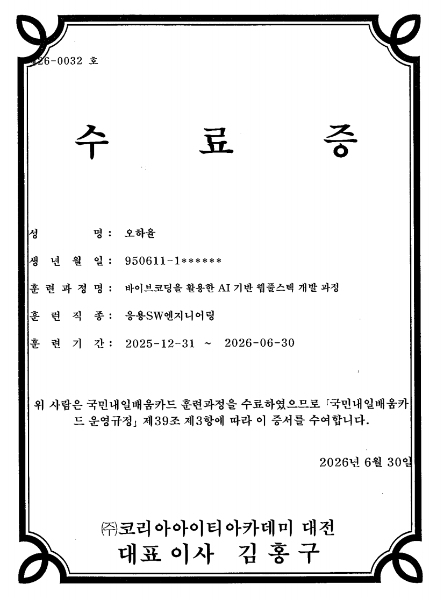

portfolio
오하율
아는 만큼 보인다고 믿고, 환자 곁의 관찰력을 코드 위에 옮기고 있는 사람
엔지니어
오하율 입니다.
병원 행정 중간관리자 출신,
웹 풀스택을 이수하고
현재 인프라 보안 엔지니어를
목표로 전환 중입니다.
Education
Experience
Certifications
Skills
Timeline
의료 행정 실무 8년 경험 → SKT ALEPH 인프라·보안 엔지니어링 집중 훈련 로드맵
2019.12 ~ 2026.01
병원 행정
원무 · 행정 중간관리자
프로세스 개선 · 민원 관리
25.12 ~ 26.06
웹 풀스택 이수
AI 기반 바이브코딩
웹 풀스택 개발 과정
26.08 ~ Active
인프라 · 보안
SKT ALEPH
네트워크 · 서버 · 클라우드
목표
보안 엔지니어
AI 기반 실시간
보안 감지 시스템 구축
Records
출석 42일(100% 무결석) · 리추얼 42일 연속 · 과제 마스터 승인 13/13개 (100% 완주)
출석률, 결석 0
리추얼 작성 일수 (2026-08-11 ~ 10-08)
강점 행동 "실천했다" 비율
매일 아침 호흡 시간
동료 피드백 교환 횟수
Strengths
의료 행정 실무 경험이 증명하는 3대 차별화 핵심 역량 (장애 대응 · 팀 빌딩 · 규제 이해)
응급실 교대 근무 시 구두 인수인계로 인해 업무 누락과 미신고가 반복 발생하여 민원 및 타 부서의 지적이 이어졌습니다.
구글 스프레드시트와 Docs를 도입하여 고정 업무, 특이사항, 인수인계 내용을 기록하고 근무지 외 교대 근무자에게 실시간으로 공유되는 환경을 구축했습니다.
야간 감염병 신고 누락이 감소하고, 상급자 지시와 특이 환자 정보가 빠르게 공유되면서 업무 실수와 근무자 스트레스가 줄었습니다.
신규 입사자가 파트별 업무 구분이 불명확하여 혼동과 부담감으로 업무 실수가 발생했습니다.
응급실, 외래, 의무기록, 제증명, 입원 등 5개 파트로 분류하고, 각 파트별 주요 업무 루틴과 매뉴얼을 문서화했습니다.
파트 간 업무 구분이 명확해지면서 신규 입사자의 타 파트 업무 습득력이 향상되었습니다.
의료진과 심사팀 간 비용 문제로 환자 및 보호자 민원이 발생하고, 외부 보험사 문의와 2차 민원으로 확대되었습니다.
의료진에서 원무로 비용 안내, 심사팀에서 원무로 급여/비급여 확인, 원무에서 의료진으로 공유되는 정보 흐름을 정립하고, 외부 문의는 원무과에서 종합 답변하도록 프로세스를 강화했습니다.
고비용 검사 시 사전 동의와 전자서명 절차가 도입되어 비용 민원이 감소했고, 환자에게 개인 보험 확인 방향을 안내하여 비용 부담을 낮출 수 있었습니다.
Projects
AI 이상탐지, 네트워크 패킷 관제, MediMatch 웹 앱 등 8대 프로덕션 증적
MediMatch — 진료비 예외정산 & 공공관리 솔루션
학술 논문 결과를 반영한 의료기관 진료비 미식별 입금 및 사망환자 미수령 환불금 검증 앱
[앱 한 문장] 병원 원무과 행정 담당자가 타인명의 송금이나 사망환자 진료비 환불금을 정산할 때, 이 앱이 논문에서 규명한 '5단계 다차원 교차검증 및 안심상속 공공연계 모형'을 통해 미식별 입금을 신속히 대조하고 적법 상속권자를 다각도로 검증하여 오지급 위험을 획기적으로 낮추고 실무 착오 리스크를 최소화해 줍니다.
"입금자명이 달라서 매번 계좌랑 차트 일일이 대조하던 일이었는데, 케이스 선택하고 검증 누르면 바로 확인돼서 실무에서 쓰기 정말 편할 것 같아요."
Fastival-management
축제 올인원 O2O 통합 플랫폼
부스 실시간 대기열·예약 시스템 및 관리자/운영자/방문객 3계층 역할 권한 제어
WeddingPlatform
웨딩 올인원 통합 플랫폼
전문가 컨설팅 예약, 모바일 청첩장 커스텀 빌더, 뷰티·헬스케어 매칭 및 CRM 일체화
VARO
남성 패션 커뮤니티 쇼핑몰
스타일링 OOTD 피드와 실시간 장바구니/주문 트랜잭션 무결성 보장 및 인증 관리
최부장 시크릿 볼트
BYTE BACK 가상 자료실 침해 방어전 실습
공개 엔드포인트 비인가 접근 차단, 데이터 캡슐화, 자동 공격 판정 엔진(Attack Check) 무결성 통과
P.D.S Canvas — 플랜두씨 다이어리
계획(Plan) → 실행(Do) → 회고(See) 성장 메트릭 다이어리
0ms FOUC 차단 로그인, 캔들라이트 심야 서재 모드, 계획-실행 시간 오차 및 Blocker 시각화, Supabase 연동
또햄찌 공방 (Hamzzi Studio)
60FPS 캔버스 기반 고화질 웹 짤방 & 스티커 에디터
피사체 지향 8방향 자동 꼬리 계산 말풍선 알고리즘, 실시간 휠 줌/팬(-100~100), 원클릭 레이어 편집
Apple 10 — 사과게임 (닌텐도 에디션)
클래식 콘솔 프레임 감성의 수학 퍼즐 & 랭킹 시스템
1~10단계 정밀 난이도 가중치 알고리즘, 실물 사과 SVG 렌더링, Web Audio BGM 선택 및 명예의 전당
Research
진료비 예외정산 이상치 탐지 연구 논문 (KCI 규격, 150건 실데이터 표본 & 재현 패키지)
의료기관 진료비 미식별 입금 및 사망환자 미수령 환불금의
공공관리체계 구축 방안
A Study on Establishing a Public Management System for Unidentified Medical Payment Deposits and Unclaimed Refunds of Deceased Patients
진료비 수납·정산 과정에서 발생하는 타인명의 대납·개명 등으로 인한 미식별 입금과, 퇴원 후 사후 환불금 중 환자 사망으로 상속 권리자를 확인하지 못해 장기 잔류하는 미수령 환불금 문제를 다룹니다. 병원 내부 정보시스템의 한계를 극복하기 위해 의료기관 내부 확인 ➔ 다차원 교차검증 ➔ 예외대상 분류 ➔ 공공행정정보(정부24 안심상속 등) 연계 ➔ 적법 후속처리로 이어지는 단계적 공공관리 모형을 설계하고, 개인정보 보호 및 법제도적 실현 방향을 제시한 연구입니다.
Vision
네트워크 센싱 → 머신러닝 이상탐지 → SOAR 자동 방어 → 기업 배포 4단계 파이프라인
AI 기반 실시간 인프라 보안 감지 시스템을 구축하여,
기업 환경에 맞게 활용할 수 있는 보안 솔루션을 만드는 것이 목표입니다.
AI 실시간 분석 (Real-time Anomaly Detection)
수집된 패킷 및 시스템 로그 벡터를 사전 학습된 머신러닝 이상치 탐지 모델(Isolation Forest / AutoEncoder)로 실시간 추론하여 제로데이 공격 및 비정상 접근 패턴을 즉시 식별합니다.
Evidence
GitHub, 자격증, 실무 에세이, 소설, MediMatch 웹 앱 등 6대 실무 증빙 링크
Documents
기술 성장 소설(11개 챕터), 입사지원서, 포트폴리오 패키지 다운로드
이력서
오하율 입사지원 이력서
기본 인적사항, 학력, 자격사항(병원행정사 등), 보유 기술 스택 및 직무 교육 이수 내역
자기소개서
오하율 자기소개서
성장 과정, 원무행정에서의 직무 경험 및 위기 대처, 가치관과 IT 인프라/보안 엔지니어로의 포부
경력기술서
오하율 직무 경력기술서
병원 원무·행정 중간관리자 실무 성과, 시스템 디지털 전환, 5개 파트 매뉴얼 수립 및 의료비 프로세스 개선
데이터 분석 장치
장치_오하율.zip
리추얼·출석·과제 원문 데이터를 정밀 파싱하여 숫자 칸 지표와 능력별 문단 후보를 자동 산출하는 Python 엔진(run.py) 및 데이터셋/결과 패키지
성장 소설 · 에세이
오하율 — 아는 만큼 보인다 (전 11장)
초등학교 시절 약봉지 정리부터 응급실 야간, 전산화 시도, 그리고 코드 앞의 엔지니어가 되기까지 11장의 성장 서사 소설
오하율 — 자기소개서
초등학교 때 아버지가 궤양성 대장염 진단을 받으신 후 식탁 위에 늘어난 약봉지를 크기 순서대로 정리하기 시작했습니다. 아침약은 왼쪽, 저녁약은 오른쪽. 누가 시킨 것이 아니라 어질러져 있는 것이 불편해 시작한 일이었지만, 혼돈 속에서 질서를 찾고 스스로 규칙을 세우던 그 습관은 이후 제 삶의 모든 순간을 관통하는 단단한 원점이 되었습니다.
그렇게 몸에 밴 관찰과 정리의 태도는 군 복무 시절 의무병 생활로 자연스럽게 이어졌습니다. 환자를 단순한 번호로 부르는 것이 마음에 걸려 모든 이의 이름을 먼저 외워 불렀고, 다음 근무자가 환자의 상태를 놓치지 않도록 꼼꼼한 인수인계 노트를 남겼습니다. 상대의 이야기를 먼저 경청하고 상황의 맥락을 입체적으로 파악하는 법을 그때 배웠습니다.
상대를 살피고 절차를 지탱하는 힘은 전역 후 대학병원 응급실 원무과에서 더욱 단련되었습니다. 야간에 혼자 15시간을 버티며 새벽 3시 환자가 끊기는 짧은 틈에 숨을 고르고 다시 접수 화면을 열어야 하는 날들이 이어졌습니다. 거센 긴장 속에서도 정해진 순서를 지키면 어떤 혼란도 흔들림 없이 수습할 수 있음을 몸으로 익혔고, 격한 미수 환자의 접수를 처리한 날이나 경위서를 쓰고 난 뒤에도 결코 다음 환자의 서류를 빠뜨리지 않았습니다.
이러한 현장 경험을 바탕으로 2022년 11월 외래수납 중간관리자로 부임하여 5개 파트의 업무 매뉴얼을 구축하고 구글 시트로 체계적인 인수인계 프로세스를 정립했습니다. 그러나 읽히지 않는 매뉴얼과 쉽게 바뀌지 않는 조직의 프로세스 앞에서 깊은 번아웃이 찾아왔습니다. 그러던 2025년 초 할머니께서 돌아가셨고, 불 켜진 빈방에 홀로 앉아 그동안 치열하게 쌓아온 것과 잃어버린 시간들을 차분히 정리하며 비로소 다른 길을 걸어보기로 결단했습니다.
그렇게 2025년, 익숙했던 병원을 떠나 IT라는 새로운 도전에 뛰어들었습니다. 바이브코딩 과정 당시 팀 프로젝트 도중 동료가 떠나는 위기를 겪기도 했지만, 남은 동료와 끝까지 중심을 잡고 완주해 냈습니다. 코드를 세 번씩 거듭 점검하고 마감을 지켜내며, 응급실에서 그랬듯 아무도 시키지 않아도 시스템에 꼭 필요한 일을 스스로 찾아 실행했습니다.
그리고 지금, 저는 SKT ALEPH에서 인프라와 보안의 영역을 깊이 있게 채워가고 있습니다. 매일 아침 오늘 할 것과 어제 배운 것, 내일 확인할 것을 리추얼로 기록합니다. 군대의 인수인계 노트나 응급실의 진료 기록처럼 기록하면 빠뜨리지 않고, 빠뜨리지 않으면 경험이 쌓이며, 쌓이면 시스템의 전체 흐름이 선명하게 보이기 때문입니다. 식탁 위의 약봉지를 정리하던 소년이 서류와 매뉴얼을 거쳐 이제는 코드와 인프라를 다루고 있지만, 제 방식의 본질은 언제나 같습니다. 먼저 깊이 관찰하고, 핵심을 파악하며, 체계적으로 정리하여 빠진 빈틈을 채우는 것입니다.
저는 사람이나 상황을 맹목적으로 믿지 않습니다. 대신 내가 직접 부딪쳐 온 과거와, 그 안에서 치열하게 쌓아 올린 경험과 데이터를 믿습니다. 병원에서 약 이름을 외우고 응급실에서 순서를 지켰듯, IT 환경에서도 데이터를 정확히 읽을 줄 알아야 비로소 시스템이 보이고 올바르게 움직일 수 있음을 체감했습니다. 깊은 번아웃이 찾아왔을 때도, 낯선 기술 앞에서 막막했을 때도 저는 언제나 호흡을 가다듬고 결국 다시 의자에 앉았습니다. 그것이 제가 여기까지 걸어온 방식이자, 앞으로 마주할 어떤 도전 앞에서도 멈추지 않고 나아갈 가장 단단한 힘입니다.

오하율 — 나를 말하는 서사 문서
1. 내 기록에서 고른 대목
리추얼 기록(2026-08-12 ~ 2026-10-02, 35일)을 직접 읽고 선별한 동료들의 진솔한 관찰 기록입니다.
| 날짜 | 누구의 말 | 내용 |
|---|---|---|
| 2026-08-12 | 동료 1 | 조용하고 묵직하여 신뢰감을 얻는 스타일 |
| 2026-08-12 | 동료 3 | 성실하고 책임감이 강하다 |
| 2026-08-18 | 동료 1 | 현실적이지만 본인에게 부족하거나 발전하려고 이것저것 찾아보는 섬세함이 좋음 |
| 2026-08-26 | 동료 1 | 하나라도 배워가려는 노력이 대단하다 |
| 2026-09-01 | 동료 1 | 잘 안되는 부분 반복해서 영상 보며 스스로 해결해보려고 노력한다 |
| 2026-09-09 | 동료 1 | 배우고 알려주면 따라해보려 하고 시도하는 게 좋은 모습이다 |
| 2026-09-10 | 동료 1 | 늦은 시간까지 같이 남아서 공부하는 열정 에너지 같이 받을 수 있어서 좋았다 |
| 2026-09-17 | 동료 1 | 정해진 시간 동안 목표한 결과물을 완성하는 데에도 정확하셨다. 만드시고 공유해주신 게임 퀄리티가 인상적이었다 |
| 2026-09-28 | 동료 1 | 늦은 시간까지 홀로 남아 프로젝트 정리를 위해 준비하는 모습에 책임감을 다하고 성실한 모습이었다 |
| 2026-09-29 | 동료 1 | 항상 옳고 그름을 올곧은 자세로 수업과 과제에 임하는 자세가 멋있다 |
| 2026-10-02 | 동료 1 | 항상 남아서 추가적인 학습을 하는 모습이 인상적입니다 |
| 2026-10-02 | 동료 3 | 팀프로젝트에서 주도적이고 자료를 공유해주는 모습이 좋았습니다 |
2. 강점 지도 (Strength Map)
리추얼 관찰 기록과 실제 경험 데이터를 바탕으로 도출된 3가지 핵심 강점입니다.
| 날짜 있는 장면 | 2026-09-28: 연휴 전날 늦은 시간까지 학원에 홀로 남아 프로젝트 정리를 마무리했다. 아무도 없는 교실에서 혼자 화면을 보며 팀 전체의 흐름을 다시 정리했다. |
| 동료의 평가 | "늦은 시간까지 홀로 남아 프로젝트 정리를 위해 준비하는 모습에 책임감을 다하고 성실한 모습이었다" (09-28) |
| 내가 본 나 | "잠자는 시간 줄여가면서 끊임없이 AI에게 질문하고 통신이 원활하게 이뤄질 수 있게 하기 위해 노력한 나의 노력과 끈기에 아낌없는 리스펙을 보낸다" (09-27) |
| 지킨 가치 | 시작했으면 끝을 보겠다는 완결 의지, 남들 쉴 때 더 준비하는 습관 |
| 관련 과제 | 과제 2 (사과게임), 과제 5 (AI A/B 인수인계 프로세스 완주), 기업 IT 인프라 SI 구축 프로젝트 |
| 날짜 있는 장면 | 2026-08-14: 쉬는 시간마다 수업 내용을 상기시키고 몸에 익혀두기 위해 반복 학습을 실천했다. 틈날 때마다 캡처해둔 화면을 꺼내보며 자기만의 연상기법으로 내용을 소화했다. |
| 동료의 평가 | "남들 쉴 때 성실하게 반복학습해서 자기 껄로 만드는 모습이 보기 좋음" (08-14), "잘 안되는 부분 반복해서 영상 보며 스스로 해결해보려고 노력한다" (09-01) |
| 내가 본 나 | "오늘 하루도 하나라도 더 배워서 내껄로 만들었다는 성취감이 든 하루였다" (08-14) |
| 지킨 가치 | 반복으로 체화시키겠다는 꾸준함, 완벽하지 않더라도 한 걸음씩 전진하는 자세 |
| 관련 과제 | 과제 3 (햄찌짤 공방 — 24개 폰트, 40개 스티커 고도화), 과제 1 (포트폴리오 — 에디토리얼 반복 수정) |
| 날짜 있는 장면 | 2026-09-17: 정해진 시간 안에 게임을 완성하고 팀에 공유했다. 동료가 "만드시고 공유해주신 게임 퀄리티가 인상적이었다"고 말했다. |
| 동료의 평가 | "팀프로젝트에서 주도적이고 자료를 공유해주는 모습이 좋았습니다" (10-02). 만들어 공유한 사과게임을 보고 수강생들이 쉬는 시간에 점수 내기 경쟁을 벌이기도 함. |
| 내가 본 나 | 병원 시절 5개 파트 업무 매뉴얼을 문서화하고, 구글 스프레드시트로 인수인계 시스템을 디지털 전환한 경험 |
| 지킨 가치 | 혼자 알고 끝내는 게 아니라, 정리해서 나누는 것까지가 완성이라는 생각 |
| 관련 과제 | 과제 2 (사과게임), 과제 6 (PDS Canvas), 기업 IT 인프라 SI 구축 프로젝트 |
3. 나의 이야기 — 고난에서 더 나아진 나
2025년, 대전.
나는 병원 원무 · 행정 중간관리자로 일하고 있었다. 응급실 인수인계가 구두로만 이루어져 누락이 반복되는 문제를 발견하고 구글 스프레드시트를 도입했고, 5개 파트의 업무 매뉴얼을 혼자 정리했다. 그런데 아무도 관심을 갖지 않았다. 프로세스를 바꿔보자고 제안해도 동료들은 시큰둥했고, 환자와 보호자, 다른 부서 직원들에게는 "일반 사무직"으로 비춰졌다. 발전된 모습을 기대하기 어려운 곳에서 혼자 벽을 밀고 있는 느낌이었다.
같은 해, 친할머니의 건강이 급격히 악화되어 세상을 떠나셨다. 더 잘해드리고 싶었던 마음, 잘못된 방법으로 해결하려 했던 죄책감, 가족과 주변 관계를 원만하게 만들지 못했다는 기대의 책임감이 겹쳤다. 2025년은 나에게 방황과 혼란의 해였다.
그 와중에도 나는 한 가지를 알아차렸다. 병원 전산실을 오가며 다른 직원의 도움을 기다리는 동안, 내가 직접 문제를 해결하는 것이 더 빠른 서비스를 제공하고 신뢰감을 준다는 것을. AI를 활용할 줄 알아야 하는 시대가 왔다는 것도 보였고, 활용능력이 능숙한 인재를 원하는 사회가 되어가는 것이 보였다. 그래서 퇴사를 결심했다. 2025년 말, 바이브코딩 AI 기반 웹풀스택 개발 과정에 등록했다.
6개월간 웹 개발을 배우면서, 병원에서 혼자 벽을 밀던 습관이 그대로 드러났다. 다만 이번에는 벽이 밀려났다. 축제 O2O 플랫폼, 웨딩 통합 플랫폼, 쇼핑몰을 만들며 "시작했으면 끝을 본다"는 내 성격이 코드 위에서도 작동했다.
2026년 8월, SKT ALEPH 인프라/보안 과정에 들어왔다. 첫날부터 아침 리추얼에 이렇게 적었다. "옛날 수업방식처럼 필기에 집착하지 않아서 변화되고 있는 거 같아." 변화를 인지하는 사람은, 이미 변하고 있는 사람이다.
13주 동안의 기록에는 같은 힘이 되풀이되었다. 쉬는 시간마다 캡처한 화면을 꺼내보며 반복 학습을 했고(08-14), 안 되는 부분을 영상을 돌려보며 스스로 해결하려 했고(09-01), 연휴 전날 홀로 남아 프로젝트를 정리했다(09-28). 동료는 말했다. "항상 옳고 그름을 올곧은 자세로 수업과 과제에 임하는 자세가 멋있다."
나는 지금, 인프라 보안 엔지니어를 목표로 준비하고 있다. AI 기반 실시간 보안 감지 시스템을 기업 환경에 맞게 구축하는 것이 꿈이다. 병원에서 프로세스를 정리하고 공유하던 습관은, 팀 프로젝트에서 자료를 정리해 공유하는 주도성으로 이어졌다. 병원에서 혼자 문제를 해결하려 했던 습관은, 이제 팀과 함께 문제를 해결하고 결과물을 공유하는 모습으로 이어지고 있다.
넘어지지 않은 사람이 아니다. 2025년의 방황을 지나, 매일 아침 호흡을 고르고 저녁에 하루를 돌아보며 한 걸음씩 더 나아지고 있는 사람이다.
4. 동료들의 진솔한 답
1인칭 서사 본문을 함께 공부하고 프로젝트를 진행한 동료들에게 보여주고 받은 피드백입니다.
나 같은 느낌이 드는가? 맞아요, 과장 없이 담백하게 소개하는 느낌이 인상깊었습니다.
지어낸 느낌이 있는 곳은? 너무 자연스럽게 느껴져 잘 모르겠습니다.
나 같은 느낌이 드는가? 80~90% 정도는 맞는 거 같아요.
지어낸 느낌이 있는 곳은? 늦게까지 남아 공부하거나 프로젝트를 정리하고, 자료를 만들어 공유했던 장면들은 실제로 봤던 모습과 가까워서 진정성이 느껴집니다.
나 같은 느낌이 드는가? 전체적으로 평소 모습이 잘 드러나는 것 같다. 특히 수업이 끝난 뒤에도 남아서 부족한 부분을 계속 공부하거나, 팀 프로젝트에서 필요한 자료를 정리하는 것을 실제로 자주 봐서 하율이형 다운 내용입니다.
지어낸 느낌이 있는 곳은? 팀원들에게 자료를 공유하고 프로젝트를 주도적으로 정리하는 모습을 생각하면 내용 자체가 과장됐다고 느껴지지는 않았습니다.
나 같은 느낌이 드는가? 내용이 주는 정보 값 자체는 하율님 같았습니다.
5. 자기소개서
초등학교 때 아버지가 궤양성 대장염 진단을 받으신 후 식탁 위에 늘어난 약봉지를 크기 순서대로 정리하기 시작했습니다. 아침약은 왼쪽, 저녁약은 오른쪽. 누가 시킨 것이 아니라 어질러져 있는 것이 불편해 시작한 일이었지만, 혼돈 속에서 질서를 찾고 스스로 규칙을 세우던 그 습관은 이후 제 삶의 모든 순간을 관통하는 단단한 원점이 되었습니다.
그렇게 몸에 밴 관찰과 정리의 태도는 군 복무 시절 의무병 생활로 자연스럽게 이어졌습니다. 환자를 단순한 번호로 부르는 것이 마음에 걸려 모든 이의 이름을 먼저 외워 불렀고, 다음 근무자가 환자의 상태를 놓치지 않도록 꼼꼼한 인수인계 노트를 남겼습니다. 상대의 이야기를 먼저 경청하고 상황의 맥락을 입체적으로 파악하는 법을 그때 배웠습니다. (대인관계력)
상대를 살피고 절차를 지탱하는 힘은 전역 후 대학병원 응급실 원무과에서 더욱 단련되었습니다. 야간에 혼자 15시간을 버티며 새벽 3시 환자가 끊기는 짧은 틈에 숨을 고르고 다시 접수 화면을 열어야 하는 날들이 이어졌습니다. 거센 긴장 속에서도 정해진 순서를 지키면 어떤 혼란도 흔들림 없이 수습할 수 있음을 몸으로 익혔고, 격한 미수 환자의 접수를 처리한 날이나 경위서를 쓰고 난 뒤에도 결코 다음 환자의 서류를 빠뜨리지 않았습니다. (자기조절력)
이러한 현장 경험을 바탕으로 2022년 11월 외래수납 중간관리자로 부임하여 5개 파트의 업무 매뉴얼을 구축하고 구글 시트로 체계적인 인수인계 프로세스를 정립했습니다. 그러나 읽히지 않는 매뉴얼과 쉽게 바뀌지 않는 조직의 프로세스 앞에서 깊은 번아웃이 찾아왔습니다. 그러던 2025년 초 할머니께서 돌아가셨고, 불 켜진 빈방에 홀로 앉아 그동안 치열하게 쌓아온 것과 잃어버린 시간들을 차분히 정리하며 비로소 다른 길을 걸어보기로 결단했습니다.
그렇게 2025년, 익숙했던 병원을 떠나 IT라는 새로운 도전에 뛰어들었습니다. 바이브코딩 과정 당시 팀 프로젝트 도중 동료가 떠나는 위기를 겪기도 했지만, 남은 동료와 끝까지 중심을 잡고 완주해 냈습니다. 코드를 세 번씩 거듭 점검하고 마감을 지켜내며, 응급실에서 그랬듯 아무도 시키지 않아도 시스템에 꼭 필요한 일을 스스로 찾아 실행했습니다. (자기동기력)
그리고 지금, 저는 SKT ALEPH에서 인프라와 보안의 영역을 깊이 있게 채워가고 있습니다. 매일 아침 오늘 할 것과 어제 배운 것, 내일 확인할 것을 리추얼로 기록합니다. 군대의 인수인계 노트나 응급실의 진료 기록처럼 기록하면 빠뜨리지 않고, 빠뜨리지 않으면 경험이 쌓이며, 쌓이면 시스템의 전체 흐름이 선명하게 보이기 때문입니다. 식탁 위의 약봉지를 정리하던 소년이 서류와 매뉴얼을 거쳐 이제는 코드와 인프라를 다루고 있지만, 제 방식의 본질은 언제나 같습니다. 먼저 깊이 관찰하고, 핵심을 파악하며, 체계적으로 정리하여 빠진 빈틈을 채우는 것입니다.
저는 사람이나 상황을 맹목적으로 믿지 않습니다. 대신 내가 직접 부딪쳐 온 과거와, 그 안에서 치열하게 쌓아 올린 경험과 데이터를 믿습니다. 병원에서 약 이름을 외우고 응급실에서 순서를 지켰듯, IT 환경에서도 데이터를 정확히 읽을 줄 알아야 비로소 시스템이 보이고 올바르게 움직일 수 있음을 체감했습니다. 깊은 번아웃이 찾아왔을 때도, 낯선 기술 앞에서 막막했을 때도 저는 언제나 호흡을 가다듬고 결국 다시 의자에 앉았습니다. 그것이 제가 여기까지 걸어온 방식이자, 앞으로 마주할 어떤 도전 앞에서도 멈추지 않고 나아갈 가장 단단한 힘입니다.
6. 포트폴리오 뼈대 (목차)
| 강점 | 관련 과제 | 산출물 |
|---|---|---|
| 끝까지 해내는 책임감 | 과제 2: 사과게임 | Apple 10 미니게임 |
| 과제 5: AI A/B 인수인계 | 모바일 UX 비교 보고서 | |
| 기업 IT 인프라 SI 구축 | 3계층 네트워크 + EMR/PACS 서버 | |
| 반복 학습의 성실함 | 과제 1: 포트폴리오 | 에디토리얼 소개 페이지 |
| 과제 3: 햄찌짤 공방 | 이미지/카드 편집기 | |
| 과제 4: 오늘의 진짜 정보판 | 데이터가 안 올 때 대응 | |
| 정리하고 공유하는 주도성 | 과제 6: PDS Canvas | Plan-Do-See 다이어리 |
| 과제 8: Portfolio-Vault | 패스키 인증 포트폴리오 |
7. AI와 나의 판단
| 구분 | 내용 |
|---|---|
| AI에게 맡긴 일 | 리추얼 기록 분석, 강점 후보 추출, 강점 지도 표 작성, 3인칭 이야기 초안 작성, 자기소개서 초안 틀 잡기 |
| 내가 직접 판단한 일 | 리추얼 기록에서 대목 12개 직접 고르기, 에이전트 규칙 5개를 내 언어로 쓰기, 우선순위 결정, 과정 이전 고난(2025년) 내용 직접 제공, 본인 성격("성실하고 차분하면서 완벽을 추구하는 자기객관화") 방향 설정, 강점 지도에서 표현 5건 수정, 3인칭 초안을 1인칭으로 직접 수정, 자기소개서 첫 문장과 마지막 문장 직접 작성 |
| AI 제안을 따르지 않은 일 | 강점 지도에서 총 5건 수정 ("박수를 보낸다" → "리스펙을 보낸다", "1이라도" → "하나라도 더", "완벽하지 않아도" → "완벽하지 않더라도 한 걸음씩", 관련 과제에 기업 IT 인프라 SI 프로젝트 추가, 사과게임 점수 경쟁 에피소드 추가) |
오하율 — 아는 만큼 보인다
초등학교 시절 약봉지를 든 아이부터 응급실 야간, 그리고 코드 앞의 엔지니어가 되기까지
제1장. 약봉지를 든 아이
하율의 기억에서 가장 오래된 냄새는 소독약이 아니라 한약 봉지의 쓴내였다.
초등학교 저학년이던 무렵, 아버지는 자주 아팠다. 궤양성 대장염이라는 병명을 하율이 처음 들었을 때는 그 단어가 무엇을 뜻하는지 몰랐다. 다만 아버지가 화장실에 오래 계시고, 어머니가 걱정스러운 얼굴로 병원에 전화를 거는 날이 많아졌다는 것은 알았다. 식탁 위에는 늘 약봉지가 여러 개 놓여 있었고, 하율은 그 약봉지를 크기 순서대로 정리하는 버릇이 있었다. 큰 것부터 작은 것 순서로. 아침에는 먹을 약을 왼쪽에 놓고, 저녁에 먹을 약을 오른쪽에 놓았다. 이미 먹은 빈 봉지는 따로 모아서 쓰레기통에 넣었다. 누가 가르쳐준 것이 아니었다. 어질러져 있는 것이 불편했을 뿐이었다.
어느 날인가 아버지가 그 모습을 보시고 웃으셨다. "약도 줄 세울 줄 아는 놈이 있네." 그 한마디가 별것 아닌데도 하율은 오랫동안 기억했다. 자기가 무언가를 정리하는 일이 누군가에게 눈에 띈 첫 번째 순간이었으니까. 아버지는 웃으신 뒤 약봉지 하나를 집어 들고, 물과 함께 삼키셨다. 하율은 그 모습을 보면서 아버지가 약을 먹는 순서도 기억했다. 큰 알약 먼저, 작은 알약.
약을 먹는 아버지의 표정을 하율은 기억한다. 아프다는 말을 잘 하지 않는 분이었다. 어머니가 "오늘 어때요?" 하고 물으면 대부분 "괜찮아"라고 답하셨다. 하지만 괜찮지 않은 날은 표정으로 알 수 있었다. 이마에 주름이 깊어지고, 입술이 마르고, 눈이 살짝 감기는 날. 그런 날은 저녁 식탁에서 밥을 한 숟갈만 드시고 일어나셨다. 하율은 그 한 숟갈을 세고 있었다. 아버지가 밥을 많이 드시면 오늘은 괜찮은 날이고, 적게 드시면 아픈 날이었다. 아이가 부모의 건강을 밥의 양으로 측정하는 것. 서글픈 일이지만, 그것이 하율이 할 수 있는 관찰이었다.
어머니는 내색하지 않는 사람이었다. 아버지의 병에 대해 아이들 앞에서 눈물을 보인 적이 없었다. 병원에 다녀와서 힘들었을 텐데도 저녁을 차리고, 빨래를 하고, 아이들의 이야기를 들었다. 하율은 어머니가 힘든 것을 알았지만, 어머니에게 "힘드세요?"라고 묻지 않았다. 물으면 어머니가 더 힘들어할 것 같았다. 대신 하율은 할 수 있는 것을 했다. 식탁을 닦고, 설거지를 하고. 말 대신 행동으로 자기 자리를 지키는 것이 하율의 방식이었고, 그 방식은 어머니에게서 배운 것인지도 몰랐다.
아버지의 병은 좋아졌다 나빠지기를 반복했다. 좋은 날에는 아버지가 거실에서 텔레비전을 보시면서 청소를 하셨다, 나쁜 날에는 방에서 나오시지 않고 잠만 주무셨다. 어머니는 생활비를 위해 일을 나가셨고, 하율과 여동생은 그 사이를 조용히 메웠다. 하율은 학교에서 돌아오면 여동생과 밥이 없는 날에는 라면을 끓이거나 계란을 삶았다. 냄비에 물을 올리고, 면을 넣고, 스프를 풀고, 계란을 깨 넣는 순서를 한 번 배운 뒤로는 틀리지 않았다. 물의 양도 눈대중이 아니라 냄비의 선에 맞추었다. 면이 퍼지지 않게 정확히 삼 분을 세는 것도 하율만의 규칙이었다.
여동생이 라면을 먹으며 말했다. "오빠가 끓인 게 제일 맛있어." 하율은 대꾸하지 않았지만 속으로는 나쁘지 않은 기분이었다. 어머니가 병원에서 돌아와 부엌에 들어왔을 때, 설거지가 되어 있는 것을 보고 잠깐 멈추신 적이 있었다. "하율이가 했어?" 하율은 고개를 끄덕였다. 어머니는 아무 말 없이 하율의 머리를 한 번 쓰다듬으셨다. 그 손길이 따뜻했다. 누군가를 돌보는 일이 자기에게 어울린다는 것을, 하율은 그때 아직 말로 정리할 수 없었다. 다만 라면 국물이 따뜻했고, 건너편에 앉은 여동생의 얼굴에 김이 올랐고, 부엌 형광등 아래의 그 장면이 유난히 선명하게 남았다.
아버지의 병원 진료가 있는 날이면 하율은 학교 끝나고 곧장 집에 왔다. 현관에 신발이 없으면 아직 병원이라는 뜻이었고, 신발이 있으면 무사히 돌아왔다는 뜻이었다. 그 작은 확인 절차를 하율은 매번 반복했다. 누가 시킨 것이 아니었다. 스스로 만든 규칙이었다. 신발이 없는 날에는 거실 불을 켜고, 여동생이 하교할 때까지 숙제를 하며 기다렸다. 여동생이 오면 같이 간식을 먹었다. 과자 봉지를 나누어 접시에 담는 것도 하율의 몫이었다.
아버지가 증상이 심한 날에는 밤에 화장실을 자주 가셨다. 하율의 방은 화장실 옆이었고, 밤에 물 내리는 소리가 들렸다. 한 번, 두 번, 세 번. 하율은 그 횟수를 세면서 잠을 설쳤다. 많이 가시는 밤은 상태가 안 좋은 것이고, 적게 가시는 밤은 괜찮은 것이었다. 아침에 일어나 아버지의 얼굴을 보면 밤의 횟수가 맞았다. 많이 가신 밤 다음 아침에는 아버지의 얼굴이 더 피곤해 보였다. 하율은 그때 아무 말도 하지 않았다. 아이가 부모에게 "괜찮으세요?"라고 묻는 것은 오히려 부모를 걱정시키는 것이었다. 아이는 모르는 척하는 것이 다른 형태의 배려일 수 있었다. 하율은 그 배려를 일찍 배웠다. 모르는 척 하면서 약봉지를 정리하고, 모르는 척 하면서 여동생 숙제를 봐주고, 모르는 척 하면서 설거지를 하는 것. 알면서 모르는 척 하는 것이 매일의 역할이었다.
병원 대기실 의자에 앉아 아버지 진료가 끝나기를 기다리는 시간이 하율에게는 특별했다. 대기실에는 늘 사람들이 앉아 있었고, 그 사람들 각자의 이유로 아프거나 걱정하고 있었다. 할머니 한 분이 손자를 데리고 와서 접수하는 모습을 보았고, 젊은 부부가 아이를 안고 불안한 얼굴로 앉아 있는 것도 보았다. 하율은 그들을 보면서 막연히 생각했다. 아픈 사람은 어디에나 있고, 누군가는 그 옆에 앉아 있어야 한다고. 그 생각이 직업 의식 같은 것이었는지는 모르겠다. 그저 병원이라는 공간이 낯설지 않았다. 소독약 냄새도, 하얀 벽도, 번호표를 뽑는 기계 소리도. 그것들이 일상의 일부였다.
아버지는 증상이 좋아지는 날이면 가족을 데리고 외식을 하셨다. 대단한 식당이 아니라 집 근처 삼겹살집이었다. 대패삼겹살과 된장찌개를 시키고, 여동생은 어김없이 물을 따르다가 쏟았다. 아버지는 그 모습을 보며 별 말씀이 없으셨다. 하율은 자기 공깃밥에 된장찌개를 먹으면서 그 장면을 바라보았다. 아무것도 하지 않아도 괜찮은 시간이 있다는 것을 느꼈다. 모든 시간이 무언가를 해야 하는 시간은 아니라는 것을. 가끔은 그냥 앉아서 밥을 먹는 것만으로도 충분한 시간이 있었다.
어느 해 겨울, 아버지의 증상이 심해져 입원을 해야 했다. 하율과 여동생은 이모 집에서 며칠을 보냈다. 이모 집에서 하율은 낯선 방에 누워 천장을 보았다. 자기 방이 아닌 곳에서 자는 것은 불편했지만, 불편하다고 말하지 않았다. 아버지가 입원해 있는데 방이 불편하다는 말은 할 수 없었다. 이모가 저녁을 차려주시며 "맛있게 먹어"라고 했을 때, 하율은 고개를 숙이고 밥을 먹었다. 여동생은 이모 집 토끼와 놀면서 웃고 있었다. 하율은 그 모습을 보면서 여동생이 웃고 있다는 것에 안도했다. 동생은 아직 상황을 정확히 이해하지 못하는 나이였고, 그래서 웃을 수 있었다. 하율은 상황을 이해했기 때문에 웃지 않았다. 이해한다는 것이 반드시 좋은 것만은 아니라는 사실을, 하율은 그때 아무렇지 않게 받아들였다.
아버지가 퇴원한 날, 다시 집으로 돌아왔다. 아버지는 얼굴이 좀 야위어 있었지만 웃으셨다. 아버지는 밥을 해주셨고, 하율은 식탁을 닦고 수저를 놓았다. 세 명이 식탁에 앉아 밥을 먹는 시간. 그 시간이 당연하지 않다는 것을 하율은 어린 나이에 알았다. 당연한 것은 없다. 매일 반복되는 것도 어느 날 중단될 수 있다. 그 사실을 아는 아이는 반복을 소중히 여기게 된다. 하율이 매일의 루틴을 빠뜨리지 않으려는 성격의 뿌리가 거기에 있었는지도 모른다.
하율의 어린 시절은 화려하지 않았다. 부유하지도, 특별히 가난하지도 않았다. 아버지는 아팠고, 여동생은 어렸고, 하율은 그 사이에서 조용히 자기 자리를 지켰다. 약봉지를 정리하고, 라면을 끓이고, 현관의 신발을 확인하고, 설거지를 하고, 여동생의 숙제를 봐주는 것. 그것이 하율이 할 수 있는 일이었고, 하율은 그 일들을 빠뜨리지 않았다. 작은 일이지만 매일 반복했고, 반복하면서 몸에 배었다. 나중에 하율이 어떤 일을 하든 빠뜨리지 않는 사람이 된 것은, 이 시절의 반복이 바탕이 되었을 것이다.
초등학교에서 하율은 눈에 띄지 않는 아이였다. 학급 반장을 하거나 발표를 잘하는 아이가 아니었다. 운동을 잘하거나 그림을 잘 그리는 것도 아니었다. 다만 준비물을 빠뜨리지 않았고, 숙제를 기한에 맞추었고, 알림장을 깨끗하게 썼다. 선생님이 칭찬하는 아이는 따로 있었지만, 하율은 문제를 일으키지 않는 아이였다. 존재감이 크지 않은 대신 안정적이었다. 교실에서 모둠 활동을 할 때 하율은 대체로 서기를 맡으며 정리를 잘했다. 발표할 내용을 종이에 옮기거나, 준비물을 배분하거나, 끝나고 책상을 원위치 시키는 일. 하고 싶어서가 아니라, 아무도 안 하면 안 되는 일처럼 보였으니까. 하율은 아무도 안 하는 일을 도맡는 습관이 어릴 때부터 있었다. 그것이 성격인지 환경이 만든 것인지는 하율도 몰랐다. 다만 그렇게 하는 것이 자연스러웠다.
중학교에 올라가서도 비슷했다. 성적은 중간쯤이었고, 친구가 많지도 않았다. 하율은 깊은 우정보다 적당한 거리를 유지하는 관계를 편안해했다. 방과 후에 친구들과 어울리는 시간보다 집에 돌아가 여동생을 챙기는 시간이 더 자연스러웠다. 그것이 하율에게 고독했느냐고 물으면, 그렇지 않았다. 혼자 있는 것이 외로운 것이 아니라 편한 것이라는 구분을 하율은 일찍 알았다. 혼자 있을 때 하율은 생각이 정리되었다. 사람이 많으면 정리가 안 되었다. 그래서 시끄러운 환경보다 조용한 환경을 선호했고, 이 성향은 이후 야간 근무에서 오히려 강점이 되었다.
훗날 하율은 병원에서 일하게 된다. 그때 하율은 자기가 왜 병원을 택했는지 스스로에게 물었고, 명확한 답을 찾지 못했다. 다만 병원 복도의 소독약 냄새가 어린 시절 아버지를 따라가던 그 복도의 냄새와 같다는 것을 알아차렸을 때, 무언가가 연결되는 느낌을 받았다. 약봉지를 정리하던 아이가, 환자의 서류를 정리하는 사람이 된 것이다. 순서를 맞추고, 빠진 것을 찾고, 제자리에 돌려놓는 일. 달라진 것은 약봉지가 서류로 바뀌었다는 것뿐이었다. 그리고 그 연결은 우연이 아니라, 어린 시절부터 쌓인 습관이 자연스럽게 만든 경로였다.
제2장. 의무병, 번호 대신 이름
군대에서 하율은 의무병이 되었다.
배정받은 보직이 의무였고, 하율은 그것을 그대로 받아들였다. 다른 보직을 원한 것도 아니었고, 의무를 특별히 원한 것도 아니었다. 주어진 자리에 가는 것. 그것이 하율의 방식이었다. 의무병의 일은 단순했다. 아픈 병사를 진료실로 안내하고, 군의관의 지시에 따라 약을 나누어 주고, 상처를 소독하고, 기록을 남기는 것. 하율은 그 일을 묵묵히 했다. 잘하려고 애쓴 것도 아니었고, 대충 하려 한 것도 아니었다. 시킨 대로, 빠뜨리지 않고, 제시간에 하는 것. 그것이 하율의 방식이었다.
처음 며칠은 모든 것이 서툴렀다. 소독약의 종류를 구분하지 못했고, 체온계 사용법도 헷갈렸고, 군의관이 지시하는 약품명을 알아듣지 못해 두 번 물어보는 일이 잦았다. 하율은 저녁에 의무실에 남아 약품 목록을 외웠다. 이름, 용도, 보관 위치, 투여 방법. 어린 시절 아버지의 약봉지를 정리하던 방식과 비슷했다. 분류하고, 순서를 정하고, 반복해서 확인하는 것. 일주일이 지나자 대부분의 약품을 찾을 수 있었고, 이 주일이 지나자 군의관이 약품명만 말하면 바로 꺼낼 수 있었다. 군의관이 한번은 말했다. "적응이 빠르네." 칭찬인지 관찰인지 모호한 한마디였지만, 하율은 그 한마디에서 자기가 제대로 하고 있다는 확인을 얻었다.
의무실은 작았다. 침대 여덟 개, 약품 선반 하나, 군의관 책상 하나, 의무병 책상 하나. 그 좁은 공간에서 하율은 하루를 보냈다. 아침에 약품 재고를 확인하고, 진료 기록부를 정리하고, 군의관이 출근하기 전에 의무실을 깨끗이 닦았다. 바닥을 쓸고, 침대 시트를 정리하고, 소독약 통의 뚜껑이 잘 닫혀 있는지 확인했다. 사소한 일이었지만, 하율은 그 사소한 일에서 빠지는 것을 싫어했다.
군 의무실에서 병사들은 번호로 불렸다. "O번 이등병 OOO, 들어오세요." 하율은 처음에 그것을 당연하게 여겼다. 군대니까. 번호가 곧 이름이었다. 하지만 한 달쯤 지났을 때, 진료를 받으러 온 병사가 문 앞에서 머뭇거리는 모습을 보았다. 그 병사는 배가 아프다고 했지만, 눈이 빨갛고 손이 떨리고 있었다. 하율은 그때 자기도 모르게 번호 대신 이름을 불렀다. "김OO 일병, 여기 앉아." 그 한마디에 병사의 어깨가 조금 내려갔다. 긴장이 풀린 것인지, 누군가가 자기를 알아본다는 안도감인지. 하율은 정확히 알 수 없었지만, 그 변화를 느꼈다.
그날 이후 하율은 의식적으로 이름을 불렀다. 진료 기록부에 적힌 이름을 미리 확인하고, 병사가 들어오기 전에 이름을 한번 읽었다. 발음이 어려운 이름은 머릿속으로 연습했다. 이름을 잘못 부르는 것은 번호로 부르는 것보다 더 나빴다. 이름은 정확해야 의미가 있었다. 하율은 그 정확함에 공을 들였다. 나중에 응급실에서 "성함 말씀해 주세요"라고 정확한 톤으로 물었던 것, 환자의 이름을 한 번에 기억했던 것, 보호자의 이름까지 기록부에 적어두었던 것. 그 모든 습관의 출발점이 의무실에서 번호 대신 이름을 부르기 시작한 그날이었다.
이름을 부르는 것은 사소했지만, 하율에게는 하나의 방법이 되었다. 번호로 부르면 사람은 환자가 되고, 이름으로 부르면 사람은 사람으로 남았다. 하율은 의무실에 오는 병사들의 이름을 외웠다. 처음에는 자주 오는 병사들만, 나중에는 한두 번 온 병사들도. 약을 건넬 때 "여기요"가 아니라 이름을 붙였다. "김OO 일병, 이거 식후에 드세요." "박OO 상병, 연고 바르시고 내일 다시 오세요." 그것이 특별한 일이라고 생각하지 않았다. 다만 그렇게 하는 편이 자연스러웠다.
의무병 생활에서 하율이 배운 것은 의학 지식이 아니었다. 소독의 기술도 아니었다. 아픈 사람 옆에 있는 법을 배웠다. 아무 말 하지 않아도 되는 순간이 있고, 한마디가 필요한 순간이 있다는 것을. 어떤 병사는 진료를 받으러 와서 아픈 데보다 군 생활의 힘듦을 이야기했다. 하율은 들었다. 조언을 하지 않았다. 해결책을 제시하지 않았다. 그냥 들었다. 듣는 것만으로도 상대의 어깨가 내려가는 경우가 있었다. 하율은 그것을 보며 배웠다. 사람에게는 해결보다 경청이 먼저 필요한 때가 있다는 것을.
병사들이 진료를 마치고 나갈 때, "감사합니다"라고 말하는 경우는 드물었다. 의무실은 병원이 아니라 군대였으니까. 하지만 가끔 복도에서 마주치면 눈을 마주치고 고개를 끄덕이는 사람이 있었다. 하율은 그것으로 충분했다. 눈인사 하나가 감사의 말보다 진솔하게 느껴질 때가 있었다.
군 생활 중에 하율은 한 가지 습관을 들였다. 매일 저녁, 그날 의무실에서 있었던 일을 짧게 기록하는 것. 진료 내용이 아니라, 자기가 느낀 것이나 다음에 확인할 것을 메모하는 수준이었다. "OOO 일병 두 번째 방문, 같은 증상 반복, 군의관에게 보고할 것." "소독약 재고 부족, 보급 신청 필요." 이 기록들이 쌓이면서 하율은 의무실의 흐름을 전체적으로 파악할 수 있게 되었다. 어떤 시기에 어떤 증상의 환자가 많은지, 어떤 약품이 빨리 소진되는지.
전역을 앞둔 어느 날, 후임 의무병에게 인수인계를 했다. 약품 목록, 진료 기록부 정리 방법, 군의관 성향, 자주 오는 환자 특이사항, 보급 신청 시기, 의무실 청소 순서. 하율은 그것을 노트 한 권에 정리해 두었다. 후임은 그 노트를 받아 들고 말했다. "이거 언제 다 쓰셨어요?" 하율은 대답했다. "틈틈이." 실제로 틈틈이 쓴 것이었다. 한꺼번에 정리한 것이 아니라, 매일 조금씩 기록하고, 나중에 보기 좋게 다듬은 것이었다. 후임은 그 노트를 펼쳐보더니 고개를 끄덕였다. "이거면 혼자서도 할 수 있겠네요." 하율은 그 말에 조용히 만족했다. 자기가 이 자리를 떠나도 돌아갈 수 있도록 만드는 것. 그것이 인수인계의 본질이라는 것을 하율은 본능적으로 알고 있었다.
군 생활의 마지막 밤, 하율은 의무실 불을 끄기 전에 약품 선반을 한 번 더 확인했다. 부족한 것은 없는지, 유통기한이 다가온 것은 없는지, 라벨이 떨어진 것은 없는지. 내일이면 떠날 곳인데도 확인을 멈추지 않았다. 그것이 하율이었다. 맡은 자리를 떠나는 마지막 순간까지, 그 자리의 상태를 확인하는 사람. 누가 보든 안 보든.
전역 후 하율은 짐을 싸면서 의무실을 마지막으로 한 번 둘러보았다. 침대 여덟 개, 약품 선반 하나, 군의관 책상, 의무병 책상. 좁은 공간이었지만, 그 안에서 보낸 시간은 하율에게 작지 않았다. 하율은 후임에게 남기고 갈 노트 마지막 페이지에 짧게 적었다. "환자 이름을 외워라. 번호보다 이름이 낫다." 후임이 그 조언을 따를지는 알 수 없었지만, 적어두는 것이 하율이 할 수 있는 마지막이었다. 군 생활에서 하율이 얻은 것은 직업적 스킬이라기보다 태도에 가까운 것이었다. 자리를 지키는 법, 기록을 남기는 법, 떠나는 순간까지 확인하는 법. 그것들이 습관이 되어 몸에 새겨졌다.
제대 후 하율은 무엇을 할지 정하지 못한 채 몇 달을 보냈다. 취업 공고를 보았지만 끌리는 것이 없었다. 대학 전공도 뚜렷한 방향을 주지 못했다. 그러던 중 병원 원무과 채용 공고를 보았다. 하율은 잠깐 생각했다. 공고를 읽고 다시 읽었다. 근무지, 직무 내용, 급여, 복리후생. 조건을 하나씩 확인하는 것이 하율의 방식이었다. 감으로 결정하는 것이 아니라, 조건을 보고 판단하는 것. 하지만 그 판단의 바닥에는 감이 아닌 경험이 있었다. 병원. 의무실에서의 시간이 떠올랐다. 아픈 사람 옆에 있는 일. 서류를 정리하고, 빠진 것을 찾고, 순서를 맞추는 일. 자기가 할 수 있는 일이었다. 하율은 지원서를 썼다. 자기소개서에 특별한 것을 쓰지 못했다. 다만 "맡은 일을 빠뜨리지 않겠습니다"라는 한 줄을 적었다. 그 한 줄이 하율의 전부이자 가장 정확한 자기소개였다.
제3장. 응급실의 첫 야간
대전성모병원 응급실. 하율이 처음 배정받은 곳이었다.
면접 때 인사담당자가 말했다. "응급실 원무는 강도가 셉니다. 괜찮겠습니까?" 하율은 고개를 끄덕였다. 강도가 세다는 것이 구체적으로 무엇을 의미하는지 그때는 몰랐다. 첫 야간 근무를 하고 나서야 알았다.
응급실 원무의 일은 환자가 들어오는 순간부터 시작되었다. 접수, 보험 확인, 서류 작성, 입원 수속, 퇴원 정산. 단어로 나열하면 단순해 보이지만, 응급실에서는 이 모든 것이 동시에 일어났다. 새벽 두 시에 교통사고 환자가 들어오고, 세 시에 급성 복통 환자가 들어오고, 네 시에 알코올 중독 환자가 소리를 지르고, 다섯 시에 경찰이 들어와 진술서 협조를 요청하는 동안에도 하율은 화면 앞에 앉아 서류를 처리했다. 한 건이 끝나기 전에 다음 건이 시작되었고, 다음 건을 처리하는 중에 이전 건의 누락이 발견되었다. 하율은 그 혼돈 속에서 순서를 만들었다. 급한 것 먼저, 나머지는 메모해 두고 순서대로.
첫 야간 근무는 열다섯 시간이었다. 혼자였다. 야간 원무 인력이 한 명이었기 때문이다. 주간에는 두 명이 교대로 앉지만, 야간에는 하율 혼자 창구를 지켰다. 화장실에 가는 것도 타이밍을 봐야 했다. 환자가 잠깐 뜸한 틈을 노려야 했고, 그 틈은 예고 없이 왔다가 예고 없이 사라졌다. 화장실에 갔다 오는 삼 분 사이에 환자가 올 수도 있었다.
식사는 더 어려웠다. 먹으면 화장실에 가야 하고, 화장실에 가려면 자리를 비워야 하고, 자리를 비울 수 있는 환경이 아니었다. 열다섯 시간 동안 혼자 근무하는 구조에서, 식사는 선택이 아니라 계산의 문제였다. 하율은 첫 야간에 저녁을 거르고 새벽까지 버텼다. 배가 고프다는 감각은 있었지만, 참을 수 있었다. 참을 수 없는 것은 환자가 왔을 때 자리가 비어 있는 것이었다. 이후에도 비슷한 야간이 반복되었고, 하율은 야간 근무 날에는 식사량을 조절하는 법을 스스로 터득했다. 근무 시작 전에 가볍게 먹고, 근무 중에는 먹지 않는 것. 누가 가르쳐준 것이 아니었다. 몸이 먼저 배웠다.
근무 초기에 선배가 하나 알려준 것이 있었다. "응급실 원무는 실수 없이 빨라야 해. 느리면 환자가 기다려." 하율은 그 말에 동의하며, 틀리지 않고 빠르게 일하는 쪽을 택했다. 접수 화면의 입력 순서를 자기만의 루틴으로 만들었다. 성명, 주민번호, 보험 종류, 내원 사유. 네 칸을 탭 키로 넘기면서 입력하는 순서를 손가락이 기억할 때까지 반복했다. 일주일쯤 지나자 화면을 보지 않아도 손이 움직였다. 환자의 얼굴을 보면서 동시에 입력할 수 있게 되었다. 그때부터 하율은 접수 과정에서 환자와 눈을 마주칠 수 있었다. 화면만 보는 직원과 눈을 마주치는 직원의 차이를 하율은 환자의 반응에서 느꼈다. 눈을 마주치면 환자의 목소리가 조금 낮아졌다. 급한 상황에서도 상대가 자기를 보고 있다는 것만으로 안도하는 사람이 있었다.
응급실 밤의 소리는 독특했다. 모니터 경고음, 들것 바퀴 소리, 보호자의 울음소리, 간호사의 발걸음, 전화벨. 하율은 처음에 그 소리들이 뒤섞여 들렸지만, 몇 주가 지나자 소리를 구분할 수 있게 되었다. 전화벨은 접수 문의인지 내과 연락인지, 발걸음은 급한 것인지 일상적인 것인지. 귀가 훈련된 것이 아니라, 반복이 구분을 만든 것이었다.
새벽 다섯 시쯤이 되면 응급실에 잠깐의 고요가 찾아오는 시간이 있었다. 환자가 줄고, 보호자들이 졸고, 간호사들이 교대 준비를 시작하는 그 사이. 하율은 그 시간에 잠깐 의자 등받이에 기대어 숨을 골랐다. 눈을 감지는 않았다. 언제 환자가 올지 모르니까. 다만 숨을 깊이 쉬었다. 들이쉬고, 내쉬고, 다시 들이쉬고. 형광등 불빛 아래, 소독약 냄새가 스며든 공기 속에서, 그 몇 분의 호흡이 하율에게는 하나의 의식이 되었다. 나중에 ALEPH에서 매일 아침저녁 리추얼을 기록하게 되었을 때, 하율이 그 습관에 자연스럽게 적응할 수 있었던 것은 응급실 새벽의 이 호흡 때문이었을 것이다.
그 새벽의 고요 속에서 하율은 가끔 생각했다. 왜 여기 앉아 있는 걸까. 돈 때문만은 아니었다. 이 일이 좋아서도 아니었다. 좋다는 감정보다는 맞다는 느낌에 가까웠다. 다만 자기 자리가 여기라는 느낌이 있었다. 누군가는 이 자리에 앉아 있어야 하고, 지금 그 누군가가 자기라는 것. 대단한 사명감이 아니라, 그냥 그런 느낌이었다. 체념도 아니었다. 체념에는 아쉬움이 묻어나지만, 하율이 느끼는 것은 아쉬움이 아니라 수용이었다.
야간 근무가 반복되면서 하율의 일상은 일반 사람들과 엇갈렸다. 사람들이 자는 시간에 일하고, 사람들이 일하는 시간에 잤다. 퇴근해서 집에 오면 아침이었고, 커튼을 치고 잠을 청했다. 바깥에서는 차 소리와 학교 종소리가 들렸지만, 하율은 그 소리에 적응했다. 적응한다는 것은 신경이 무뎌지는 것이 아니라, 소리를 인지하면서도 잠들 수 있는 상태를 말했다. 일종의 훈련이었다. 몸이 기억하는 리듬을 바꾸는 훈련.
쉬는 날에도 생체 리듬은 쉽게 돌아오지 않았다. 밤 열한 시가 넘어야 잠이 왔고, 오전에 일어나도 머리가 무거웠다. 야간 근무자들의 공통된 증상이었지만, 하율은 그것을 증상이라고 생각하지 않았다. 일의 일부라고 여겼다. 누군가는 이 시간에 깨어 있어야 하고, 그 누군가가 자기라면 그에 따르는 불편도 자기 것이라고. 그 수용이 건강한 것인지, 무감각한 것인지, 하율은 판단하지 않았다. 다만 버텼다.
응급실에서 일하면서 하율은 사람의 다양한 모습을 보았다. 응급 상황으로 실려 온 사람, 가벼운 상처인데 겁이 나서 온 사람, 갈 곳이 없어서 응급실 의자에 앉아 있는 사람. 보호자 중에는 울면서 들어오는 사람도 있었고, 화를 내면서 들어오는 사람도 있었고, 아무 말 없이 허공을 보는 사람도 있었다. 하율은 그 모든 사람에게 같은 톤으로 말했다. 높이지도, 낮추지도 않는 목소리. "어떻게 오셨어요?", "성함 혹은 신분증 보여주세요.", "접수되었습니다, 잠시 앉아서 성함 호명되시면 들어가실게요."
그 균일한 톤이 하율의 장점이었다는 것을 하율 자신은 몰랐다. 나중에 간호사가 말해주었다. "오 선생은 누가 와도 똑같이 대해. 그게 응급실에서는 중요한 거야. 환자가 불안할 때 접수하는 사람이 같이 불안하면 안 되거든." 하율은 그 말을 듣고 잠깐 생각했다. 자기는 의식적으로 그렇게 한 것이 아니었다. 그냥 그렇게 하는 것이 편했을 뿐이었다. 하지만 그 편안함이 일종의 능력이라는 것을, 하율은 그때 처음 알았다.
응급실의 밤은 길었다. 하지만 어떤 밤은 유난히 짧았다. 정신없이 환자를 처리하다 보면 어느새 아침이었다. 주간 근무자가 출근하고, 하율은 자리를 넘기고, 병원 뒷문으로 나왔다. 아침 공기가 차가웠다. 하늘이 밝아지고 있었다. 가로수 사이로 아침 햇살이 비스듬히 내려왔고, 출근하는 사람들이 하율과 반대 방향으로 걸어갔다. 하율은 그 공기를 마시며 집으로 향했다. 집까지 이십 분. 그 이십 분이 하율의 하루 중 가장 조용한 시간이었다. 아무도 부르지 않고, 아무 서류도 없고, 그냥 집으로 향하면 되는 시간. 하율은 그 시간을 좋아했다. 새소리가 들리는 그 이십 분이, 열다섯 시간의 야간을 버틸 수 있게 해주는 보상이었다.
제4장. 서진혁이 가르쳐준 것
서진혁은 하율보다 9개월 전 먼저 응급실 원무에 들어온 선배였다.
말이 똑부러졌고, 일 처리가 빨랐다. 하율이 모르는 것을 물으면 간결하게 답해 주었고, 같은 것을 두 번 묻지 않게 한 번에 정확히 설명했다. 설명할 때 군더더기가 없었다. "이건 이렇게 해. 이유는 이래서야." 끝이었다. 하율은 그 방식이 좋았다. 불필요한 말이 없으니 집중할 수 있었다. 서진혁은 감정을 드러내는 사람이 아니었지만, 하율이 실수했을 때 소리를 높이지 않았다. "여기가 빠졌어. 다음엔 이 순서로 해." 그것만 말하고 자기 일로 돌아갔다. 하율은 서진혁에게 많은 것을 배웠지만, 가장 중요한 것을 배운 건 서진혁이 더 이상 없는 날이었다.
응급실에서 일하다 보면 예측할 수 없는 상황이 온다. 교통사고, 화상, 식중독, 그리고 때로는 스스로를 해친 사람. 하율이 근무하던 어느 야간, 한 환자가 응급실에 실려 왔다. 신원 미상의 환자였다. 의료진이 빠르게 움직였고, 하율은 접수와 보험 확인을 하면서 동시에 상황을 파악해야 했다. 손이 떨리지는 않았지만, 머릿속이 하얘지는 순간이 있었다. 무엇을 먼저 해야 하는지 순서가 엉켰다. 접수를 해야 하나, 보호자에게 연락을 해야 하나, 경찰에 연락을 해야 하나.
그때 하율은 서진혁이 알려준 순서를 떠올렸다. "일단 접수 먼저. 보험은 나중에 확인해도 되지만 접수를 빠뜨리면 안 돼. 경찰은 간호사가 연락하니까 네가 따로 안 해도 돼. 네 일은 서류야. 서류를 놓치지 마." 서진혁은 이런 상황을 몇 번 겪었고, 그때마다 같은 순서를 밟았다고 했다. 혼란스러울 때일수록 순서를 정해놓으면 흔들리지 않는다고. 하율은 그 순서를 머릿속에서 꺼내어 하나씩 실행했다. 접수. 신원 확인. 보호자 연락처 기록. 서류 정리. 하나씩 하니까 할 수 있었다.
그 밤은 길었다. 환자는 의료진에게 넘겨졌고, 하율은 그 뒤의 서류를 처리했다. 밤이 지나고 아침이 되었다. 하율은 경위서를 작성해야 했다. 경위서는 그 상황에서 원무가 어떤 절차를 밟았는지 기록하는 문서였다. 하율은 시간 순서대로 적었다. 몇 시 몇 분에 환자 도착, 몇 시 몇 분에 접수 완료, 몇 시 몇 분에 보호자 연락, 몇 시 몇 분에 입원 수속. 사실만 적었다. 감정은 적지 않았다. 경위서에 감정을 넣을 자리는 없었다. 하지만 감정이 없는 것은 아니었다. 하율은 그 경위서를 다 쓰고 나서야 몸이 떨리기 시작했다. 사후 반응이었다. 상황 중에는 차분했지만, 상황이 끝나고 나서 몸이 반응했다.
경위서를 다 쓰고 퇴근길에 하율은 평소보다 느리게 걸었다. 발걸음이 무거운 것이 아니라 머릿속이 복잡했다. 미수 환자의 얼굴은 기억나지 않았다. 접수할 때 본 이름과 나이만 기억났다. 하율보다 두 살 어렸다. 그 사실이 하율을 오래 붙들었다. 두 살 차이. 자기와 비슷한 나이의 사람이 그런 선택을 했다는 것. 하율은 그 사람의 사정을 알 수 없었고, 알 권한도 없었다. 다만 자기가 할 수 있는 것은 서류를 빠뜨리지 않는 것, 접수를 정확히 하는 것, 그래서 그 사람이 이후에 필요한 의료와 행정 절차에서 불이익을 받지 않도록 하는 것뿐이었다. 원무가 할 수 있는 것은 거기까지였다. 하지만 거기까지라도 빠뜨리지 않는 것. 그것이 그 밤, 하율이 자기 자신에게 할 수 있는 최선의 말이었다.
그 경위서를 쓰면서 하율은 자기가 하는 일의 무게를 처음 느꼈다. 원무는 의료 행위를 하지 않는다. 주사를 놓거나 수술을 하는 사람이 아니다. 하지만 원무가 접수를 빠뜨리면 환자의 기록이 사라진다. 보험 확인을 놓치면 환자에게 수백만 원의 부담이 돌아간다. 서류 한 장이 한 사람의 이후를 바꿀 수 있다. 하율은 그 무게를 느꼈고, 동시에 자기가 그 무게를 견딜 수 있는 사람이라는 것도 느꼈다. 무너지지 않았으니까. 순서를 밟았으니까.
서진혁은 얼마 뒤 다른 파트로 옮겼다. 떠나기 전에 하율에게 말했다. "네가 이 자리에 맞는 것 같아. 꼼꼼하고, 흔들리지 않고, 순서를 지키니까." 하율은 감사합니다, 라고 말했지만, 속으로는 이 자리에 맞는 게 좋은 건지 나쁜 건지 잘 모르겠다고 생각했다. 응급실 야간 원무에 맞는 사람이라니. 그게 칭찬인지, 단순한 관찰인지, 혹은 "이 힘든 자리에 적응할 수 있는 사람은 별로 없는데 네가 바로 그중 하나다"라는 의미인지.
서진혁이 떠나기 전날, 둘은 야간 근무를 마치고 병원 앞 감자탕 집에서 술한잔을 했다. 새벽 여섯 시의 감자탕집. 둘 다 말이 적은 사람이어서 오래 앉아 있어도 어색하지 않았다. 서진혁이 말했다. "이 일을 왜 시작한거야?" 하율은 잠깐 생각하고 답했다. 별다른 말을 하지 못했다. 서진혁은 고개를 끄덕였다. "나도 비슷해." 그것이 둘의 마지막 대화였다. 긴 말이 필요 없는 관계. 할 수 있는 일을 하는 사람과 할 수 있는 일을 하는 사람 사이의 이해. 하율은 그 감자탕 집 술 한잔을 기억하지 못하지만, 창밖으로 보이던 아침 하늘의 색은 기억했다. 회색에서 연한 파랑으로 바뀌어 가던 하늘. 서진혁은 그 하늘 아래로 걸어갔고, 하율은 반대 방향으로 갔다.
하지만 하율은 그 자리를 지켰다. 서진혁이 떠난 뒤에도, 새로운 직원이 오지 않는 날에도, 혼자서 열다섯 시간을 버텼다. 새벽에 숨을 고르고, 아침에 자리를 넘기고, 병원 뒷문으로 나와 걸었다. 그 반복 속에서 하율은 조금씩 단단해졌다. 단단해진다는 것이 감정이 없어지는 것은 아니었다. 감정을 느끼되, 그 감정이 순서를 흐트러뜨리지 않게 하는 법을 배운 것이었다. 서진혁이 떠나면서 남긴 것은 인수인계 노트가 아니라, 순서의 중요성이었다. 혼란 속에서도 순서를 지키면 해낼 수 있다는 것. 그 가르침을 하율은 몸에 새겼다.
제5장. 구글 시트 한 장
2020년 초에서 중순 사이, 하율은 조용히 한 가지를 시작했다.
응급실 인수인계는 구두로 이루어졌다. 주간 근무자가 야간 근무자에게 말로 전달했다. "3번 베드 환자 보호자 연락 안 됐고, 7번 베드는 입원 수속 내일 아침에 해야 하고, CT 예약은 담당 선생님이 내일 확인한다고 했어." 말로 전달하면 빠지는 것이 생겼다. 3번 베드 이야기는 했는데 5번 베드를 잊거나, 입원 수속 시간이 아침인지 오후인지 헷갈리거나, 보호자 연락을 이미 했는지 아직인지 기억이 불확실하거나. 인수인계 누락은 곧 환자에게 영향을 주었다. 서류가 늦어지고, 보험 청구가 밀리고, 보호자에게 같은 말을 두 번 해야 했다. 하율은 그 비효율이 불편했다.
하율은 구글 스프레드시트를 열었다. 개인 계정으로 만든 시트였다. 병원 공식 시스템이 아니라 하율 개인의 도구였다. 열 제목을 정했다. 날짜, 베드 번호, 환자 성명, 접수 상태, 보험 확인, 보호자 연락, 특이사항, 담당 확인. 색깔 규칙도 정했다. 처리 완료는 초록, 진행 중은 노랑, 미처리는 빨강. 그리고 그날 야간 근무를 시작하면서 빈칸을 채워 나갔다. 근무가 끝나면 시트 링크를 다음 근무자에게 보냈다. "이거 보면 돼요. 빨간 칸은 아직 안 된 거예요."
처음에 ER 파트 직원들은 시트를 쓰기 시작했다. 링크를 열어 확인하고, 자기 근무 때 처리한 것을 표시했다. 말로 전달할 때보다 누락이 줄었다. 이전에는 "그거 말했잖아" "아니, 못 들었는데"라는 대화가 빈번했는데, 시트가 생기고 나서는 "시트에 있잖아" 한마디로 끝났다. 하율은 조용히 만족했다. 시트 하나가 인수인계의 질을 바꾸고 있었다. 큰 변화가 아니었다. 다만 빠지는 것이 줄었을 뿐이었다. 하지만 빠지는 것이 줄어든다는 것은 환자에게 직접적인 차이를 만들었다.
하지만 상급자들의 시선은 달랐다. 오래 병원에 있던 사람들, 기존 방식으로 일해 온 사람들에게 하율의 시도는 불편한 변화였다. 병원은 보수적인 조직이었다. 오래된 프로세스에는 이유가 있다고 여기는 문화가 있었다. "지금까지 이렇게 해왔는데 뭘 바꾸려고 하냐." 직접적으로 그런 말을 하는 사람은 드물었지만, 분위기는 읽혔다. 회의에서 하율이 시트 이야기를 꺼내면 반응이 미지근했다. 관심을 보이는 것도 아니고 반대를 하는 것도 아닌, 그냥 듣고 넘어가는 분위기. 눈엣가시라는 표현이 과하지 않았다. 젊은 직원이 혼자 무언가를 만들어서 공유하고, 다른 직원들이 그걸 쓰기 시작하면, 기존 시스템의 결함이 드러나는 것이니까.
하율은 말하지 않았다. 기존 방식이 잘못되었다고 말한 적이 없었다. 다만 시트를 만들어서 공유했을 뿐이었다. 하지만 행동 자체가 메시지였다. 불편한 메시지. 하율은 그 불편함을 감수하면서 시트를 유지했다. 상급자가 직접 쓰지 말라고 지시하지는 않았으니까. 지시가 없으면 계속하는 것. 그것도 하율의 방식이었다.
어느 날, 야간 근무 중에 시트를 확인하다가 비고란에 누군가가 적어 놓은 메모를 발견했다. "편하다." 딱 세 글자. 누가 적었는지 계정을 보면 알 수 있었지만, 하율은 확인하지 않았다. 그 세 글자로 충분했다. 자기가 만든 것이 누군가에게 쓸모가 있었다는 것. 그것이면 됐다. 하율은 화면에서 그 세 글자를 보고 잠깐 멈췄다. 응급실 야간의 형광등 아래, 모니터의 푸른 빛 속에서, 그 세 글자가 유난히 밝게 보였다. 하율은 잠깐 웃었다. 그리고 다음 칸을 채우러 갔다.
시트를 유지하는 것은 만드는 것보다 더 많은 에너지가 들었다. 매일 근무가 시작되면 전날 시트를 확인하고, 빈칸이 있으면 채우고, 상태가 바뀐 것은 업데이트해야 했다. 자기 근무 때만 관리하면 되는 것이 아니라, 다른 사람이 빠뜨린 부분도 잡아야 했다. 노란색으로 표시된 '진행 중' 칸이 이틀째 그대로인 것을 발견하면, 해당 담당자에게 물었다. "이거 아직 진행 중인 거예요?" 대부분은 "아, 깜빡했어요" 하며 처리했다. 가끔은 "시트까지 확인해야 하나요?"라는 반응도 있었다. 하율은 그런 반응에 말을 보태지 않았다. "확인만 부탁드려요." 그것만 말했다. 설득하지 않았다. 시트의 유용함은 말이 아니라 결과로 증명되어야 한다고 생각했다. 실제로 시트를 쓰기 시작한 뒤 인수인계 관련 민원이 줄었다. 수치를 낸 것은 아니었지만, 체감할 수 있는 정도였다.
시트는 완벽하지 않았다. 인터넷이 안 되는 구역에서는 열 수 없었고, 병원 전산 시스템과 연동되지 않았고, 공식 문서가 아니라 법적 효력도 없었다. 보안 문제도 있었다. 개인 계정으로 만든 시트에 환자 정보를 넣는 것이 적절한지에 대한 고민도 있었다. 하율은 그 한계를 알았다. 나중에 보안을 배우면서 개인 계정으로 업무 데이터를 관리하는 것이 정보 보안 관점에서 얼마나 위험한 행동이었는지 깨닫게 되었다. 하지만 당시에는 그것이 유일한 방법이었다. 병원 공식 시스템에 인수인계 도구가 없었고, 도구를 만들어 달라고 요청해도 우선순위에 밀렸다. 하율은 가용한 자원 안에서 최선을 택한 것이었다. 완벽하지 않은 선택이었지만, 아무것도 하지 않는 것보다는 낫다는 판단. 하율의 판단 기준은 항상 그것이었다. 이상적인 것이 아니라 가능한 것. 완벽한 것이 아니라 지금 할 수 있는 것.
그래도 구두 인수인계보다는 나았다. 빠진 것이 눈에 보이니까. 빨간 칸이 남아 있으면 아직 처리 안 된 것이 있다는 뜻이니까. 완벽하지 않은 도구라도, 도구가 없는 것보다는 나았다.
이 경험은 나중에 하율이 업무 매뉴얼을 만들고, 프로세스를 디지털로 전환하려는 시도를 하는 바탕이 되었다. 구글 시트 한 장에서 시작한 것이, 5개 파트 매뉴얼 문서화로 이어졌다. 하율은 그것을 "디지털 전환"이라고 부르지 않았다. 그냥 "정리"라고 불렀다. 빠진 것을 찾고, 순서를 맞추고, 누구나 볼 수 있게 만드는 것. 약봉지를 크기 순서대로 놓던 아이가, 업무를 정리하는 사람이 된 것이었다. 도구가 약봉지에서 구글 시트로 바뀌었을 뿐, 하는 일의 본질은 같았다.
제6장. 혼자서 고치려던 사람
2022년 10월 31일, 하율은 응급실 마지막 근무를 마쳤다.
11월부터 외래 수납 파트로 이동했다. 응급실 야간 원무로 근무한 기간이 길어지면서 체력적으로 한계가 왔다. 열다섯 시간 혼자 근무하는 패턴이 몸에 누적되었다. 잠을 자도 개운하지 않았고, 쉬는 날에도 긴장이 풀리지 않았다. 몸이 보내는 신호였다. 그것만이 이유는 아니었다. 응급실에서 하율이 할 수 있는 일의 범위가 정해져 있다는 것을 느꼈다. 시트를 만들고, 매뉴얼을 정리하고, 인수인계 누락을 줄이는 것. 그 이상은 원무의 권한 밖이었다. 시스템 자체를 바꾸려면 병원 전체의 결정이 필요했고, 하율 한 사람이 밀 수 있는 범위를 넘어서는 일이었다.
외래 수납 파트에서 하율은 중간관리자 역할을 맡았다. 수납 창구 직원들의 업무를 조율하고, 민원을 처리하고, 상급자에게 보고하는 위치. 응급실과 달리 야간 근무는 없었지만, 다른 종류의 스트레스가 있었다. 사람을 관리하는 일은 서류를 처리하는 일과 달랐다. 서류는 순서를 정하면 되지만, 사람은 순서대로 움직이지 않았다. 각자의 사정이 있고, 각자의 속도가 있고, 각자의 불만이 있었다.
중간관리자라는 직함은 있었지만 권한은 제한적이었다. 상급자의 결정을 전달하고, 하급자의 불만을 수렴하고, 그 사이에서 균형을 잡는 것. 하율은 그 역할에서 응급실과는 다른 종류의 피로를 느꼈다. 응급실에서는 몸이 힘들었다. 외래에서는 마음이 힘들었다. 직원 A가 직원 B에 대한 불만을 하율에게 말했고, 하율은 그것을 어떻게 처리해야 하는지 고민했다. 양쪽 다 틀린 것이 아닌 경우가 대부분이었다. 다만 방식이 달랐을 뿐이었다. 하율은 판단하지 않으려고 했다. 듣고, 확인하고, 필요한 부분만 조정했다. 의무병 시절 "듣는 것만으로 상대의 어깨가 내려가는 경우가 있다"는 것을 배운 경험이 여기서도 쓰였다. 불만을 가진 직원에게 해결책을 제시하기보다 먼저 들었다. 들어주면 절반은 해결되는 경우가 있었다. 절반은 안 되는 경우도 있었지만.
하율은 외래 파트에서도 정리를 시도했다. 수납 업무 흐름을 문서화하고, 자주 발생하는 민원 유형을 분류하고, 처리 절차를 매뉴얼로 만들었다. 5개 파트의 업무 매뉴얼을 혼자 작성했다. 누가 시킨 것이 아니었다. 하율이 스스로 필요하다고 판단했기 때문이다. 새로운 직원이 들어올 때마다 같은 것을 처음부터 설명해야 하는 비효율이 싫었다. "이건 어떻게 하는 거예요?" "아, 그건 이렇게 해요." 같은 대화를 매번 반복하는 것보다, 매뉴얼이 있으면 기본적인 것은 읽고 시작할 수 있었다.
하지만 매뉴얼을 읽는 사람은 많지 않았다. 하율은 공유 폴더에 올려두고 메신저로 안내했지만, 대부분의 직원들은 여전히 "선배한테 물어봐"를 선택했다. 문서를 읽는 것보다 사람에게 묻는 것이 익숙한 문화였다. 하율은 실망하지 않으려고 했지만, 조금은 실망했다. 만든 사람은 혼자인데 쓰는 사람도 혼자인 매뉴얼. 그것이 하율의 현실이었다. 가끔 새로운 직원이 매뉴얼을 보고 "이거 도움이 됐어요"라고 말하면 하율은 속으로 조금 안도했다. 아주 가끔이었지만, 그 가끔이 하율을 유지시켰다.
2025년 3월 말, 하율은 대전의 병원을 떠났다. 외래 수납 중간관리자로 근무한 기간은 2022년 11월부터 2025년 3월까지. 약 2년 5개월. 그 기간 동안 하율이 만든 매뉴얼은 어떻게 되었을까. 하율이 떠나면서 매뉴얼을 관리하는 사람이 없어졌고, 아마 시간이 지나면서 내용이 업데이트되지 않아 쓸모없어졌을 것이다. 하율은 그것을 짐작했지만 확인하지 않았다. 확인해봤자 달라지는 것은 없었으니까. 다만 한 가지 바람이 있었다면, 자기가 만든 매뉴얼의 구조라도 누군가 기억해주면 좋겠다는 것이었다. 내용이 낡아도 구조는 남을 수 있었다. 항목을 나누고, 순서를 정하고, 빠진 것을 표시하는 방식. 그 방식을 한 사람이라도 가져갔다면, 하율이 그 자리에 있었던 시간이 완전히 사라진 것은 아닐 것이었다.
하율은 떠나기 전 마지막으로 매뉴얼 폴더를 정리했다. 파일명을 깔끔하게 바꾸고, 최종 수정일을 확인하고, 읽는 순서를 안내하는 메모를 폴더 첫 페이지에 넣었다. 후임에게 폴더 위치를 알려주었다. 후임은 고개를 끄덕였지만, 그 폴더를 열어볼 것인지는 하율도 알 수 없었다. 약품 선반을 정리하던 의무병 시절과 같았다. 떠나는 사람은 자기가 할 수 있는 최선의 상태로 만들어 놓고 가는 것. 이후에 어떻게 되는지는 남는 사람의 몫이었다. 하율은 그것을 알았고, 그래도 정리를 멈추지 않았다. 누군가 열어볼 수도 있으니까. 아무도 열어보지 않더라도, 정리된 상태 자체가 하율이 그 자리에 있었다는 흔적이니까.
4월에 세종의 한 개인병원으로 이직하게 된다. 새로운 환경에서 다시 시작할 수 있을 거라고 생각했다. 하지만 작은 병원은 작은 병원대로의 한계가 있었다. 인력이 적어 한 사람이 여러 역할을 해야 했고, 시스템을 개선할 여력이 없었다. 하율은 거기서도 정리를 시도했지만, 결과는 비슷했다. 정리는 했지만 유지되지 않았다. 하율이 하면 정리가 되고, 하율이 안 하면 흐트러졌다.
퇴근 후 자취방에 돌아오면 하율은 습관적으로 핸드폰을 확인했다. 업무 메신저에 새 알림이 있으면 확인하고, 다음 날 할 일을 정리했다. 쉬는 시간에도 일에서 완전히 벗어나지 못하는 것. 그것이 책임감인지 강박인지 하율은 구분하지 못했다. 응급실에서 야간 근무를 하던 시절에는 근무가 끝나면 확실히 끝이었다. 다음 근무자에게 자리를 넘기면 그 이후는 하율의 시간이 아니었다. 하지만 중간관리자가 되면서 근무 시간의 경계가 흐려졌다. 새벽에 직원이 보낸 메시지, 주말에 온 민원 보고, 공휴일에 시스템 오류 연락. 하율은 그것들을 확인하지 않으면 불안했다. 확인하는 것이 자기 역할이라고 생각했다. 하지만 그 역할이 자기를 조금씩 소진시키고 있다는 것도 느꼈다. 소진은 갑자기 오지 않았다. 매일 조금씩 깎이는 것이었다. 나무가 바람에 꺾이는 것이 아니라, 천천히 마르는 것처럼.
하율은 가끔 생각했다. 내가 이 일에 맞지 않는 건지, 이 환경이 나와 맞지 않는 건지. 분명한 것은 하나였다. 하율은 문제를 보면 고치고 싶은 사람이었다. 비효율을 보면 정리하고 싶었고, 빠진 것을 보면 채우고 싶었다. 하지만 그 욕구가 채워지는 환경이 아니었다. 하율이 고치고 싶은 것을, 주변은 고칠 필요가 없다고 여겼다. 혹은 고쳐야 한다는 것을 알지만 고칠 여력이 없다고 판단했다.
세종의 개인병원에서 하율은 한 가지 더 깨달았다. 환경의 크기와 상관없이, 혼자 하는 일에는 천장이 있다는 것을. 대형 병원에서도 혼자였고, 작은 병원에서도 혼자였다. 장소가 바뀌어도 패턴은 같았다. 하율이 시작하고, 하율이 유지하고, 하율이 떠나면 사라지는 것. 이 패턴을 깨려면 혼자가 아닌 구조가 필요했다. 한 사람의 노력이 아니라, 여러 사람이 함께 쓰는 시스템이 필요했다. 하율은 그 시스템을 만드는 쪽의 사람이 되고 싶다는 생각이 어렴풋이 들었다. 사용하는 사람이 아니라 만드는 사람. 정리하는 사람이 아니라 정리할 수 있는 도구를 만드는 사람. 그 생각이 나중에 IT 전환의 한 동기가 되었다.
혼자서 고치려는 것의 한계를 하율은 조금씩 느꼈다. 혼자 매뉴얼을 만들고, 혼자 시트를 관리하고, 혼자 프로세스를 정리하는 것. 그것은 필요한 일이었지만, 혼자 하는 일은 혼자 끝나기 쉬웠다. 하율이 떠나면 그 시트도, 매뉴얼도, 정리된 프로세스도 함께 사라질 가능성이 높았다. 하율은 그것을 알았지만, 그래도 멈추지 않았다. 자기가 있는 동안만이라도 빠진 것이 없도록 하는 것이 하율의 방식이었으니까. 포기하지 않는 것과 무의미한 반복 사이의 경계를 하율은 아직 정확히 긋지 못했다. 다만 멈추기보다는 지금 할 수 있는 것을 하는 쪽을 선택했다.
제7장. 2025년, 대전의 여름
2025년 7월, 대전.
할머니가 돌아가셨다.
하율에게 할머니는 먼 존재가 아니었다. 어린 시절 부모님이 바쁜 날에는 할머니 댁에서 지냈고, 할머니는 하율을 "우리 하율이"라고 불렀다. 할머니의 집에는 늘 시래기가 있었고, 김치가 있었고, 둥근 밥상이 있었다. 할머니는 하율에게 밥을 주실 때 늘 한 숟갈을 더 올려주셨다. "많이 먹고 골고루 먹어야 크지." 하율은 이미 다 컸는데도 할머니에게는 늘 더 먹여야 하는 아이였다. 하율은 그 밥상에서 밥을 먹고, 텔레비전을 보고, 가끔 할머니 근처에 기대어 졸았다. 특별할 것 없는 풍경이었지만, 그래서 더 단단한 풍경이었다. 화려한 기억은 흐려지지만, 일상의 기억은 선명히 남는다.
할머니의 건강이 나빠진 것은 갑작스러웠다. 괜찮으셨던 분이 갑자기 입원하셨고, 몇 달 사이에 상태가 급격히 악화되었다. 하율은 병원을 오갔다. 자기도 병원에서 일하는 사람이면서, 할머니 병실 앞에 서면 아무것도 할 수 없었다. 원무과 직원으로서는 서류를 처리하고 보험을 확인하는 일을 할 수 있었지만, 손자로서는 그저 지켜보는 것뿐이었다. 그 무력함이 이상했다. 바쁘다는 핑계로 미뤘던 것은 없었는지. 마지막에 무슨 말을 했는지. 기억이 선명하지 않은 것이 괴로웠다. 기억이 선명해도 괴로울 것을 알면서, 선명하지 않은 것이 더 괴로웠다. 사람은 지나간 뒤에야 소중함을 알고, 알고 나면 되돌릴 수 없다는 것. 누구나 아는 말이지만, 직접 겪으면 그 말의 무게가 달랐다.
어느 날 퇴근 후, 하율은 할머니 댁에 갔다. 아무도 없는 집이었다. 현관 앞에서 열쇠를 꺼내려다가 손이 멈추었다. 열쇠를 돌리면 안에는 텅 빈 방이 있을 것이고, 시래기도 김치도 둥근 밥상도 없을 것이었다. 하율은 열쇠를 돌리지 않고 현관 앞에 잠깐 서 있었다. 문 앞에 서 있는 것만으로 충분한 날이 있었다. 안에 들어가면 빈 공간이 슬픔을 확대시킬 것 같았다. 하율은 돌아섰다. 집으로 돌아오는 차 안에서 창밖을 보았다. 대전의 가로등이 하나씩 켜지고 있었다. 주황색 불빛이 도로 위에 길게 늘어졌다. 하율은 그 불빛을 보면서 할머니가 저녁마다 거실 불을 켜두셨던 것을 떠올렸다. "불 켜둬야 집이지." 할머니의 말씀이었다. 하율의 자취방에 돌아왔을 때, 이번에는 불을 켰다. 어두운 방에 앉아 있는 대신, 불을 켜고 앉았다. 작은 변화였지만, 그것이 하율의 방식이었다. 한꺼번에 바뀌지 않더라도, 한 가지씩.
같은 시기, 하율은 직장에서도 한계를 느끼고 있었다. 혼자서 프로세스를 정리하고, 혼자서 매뉴얼을 만들고, 혼자서 시트를 관리하는 일. 그 일들이 갑자기 무의미하게 느껴졌다. 할머니를 잃은 슬픔과 직장에서의 한계가 겹치면서, 하율의 2025년 여름은 어두웠다. 잃은 것과 막힌 것이 동시에 찾아온 계절이었다.
그 여름 동안 하율은 한 가지를 깨달았다. 자기가 잃은 것과 자기가 가진 것의 목록이 달라지고 있다는 것을. 할머니를 잃었다. 직장에서의 성장 가능성도 잃었다. 하지만 가진 것도 있었다. 병원에서 쌓은 경험, 서류를 정리하는 능력, 프로세스를 파악하는 눈, 빠뜨리지 않는 꼼꼼함. 그것들은 잃은 것이 아니었다. 여전히 하율의 안에 있었다. 다만 그것들을 쓸 곳이 바뀌어야 한다는 느낌이 들었다. 같은 도구를 다른 곳에 쓰는 것. 그 생각이 아직 구체적이지는 않았지만, 방향은 있었다.
하지만 계절은 기다리지 않았다. 여름이 지나면 가을이 왔고, 가을이 되면 해가 짧아졌다. 하율의 마음이 가을과 함께 밝아진 것은 아니었다. 감정은 계절처럼 깔끔하게 바뀌지 않았다. 다만 가을의 공기가 여름보다 서늘했고, 해가 짧아졌고, 그 물리적인 변화가 조금은 영향을 주었다. 하율은 어느 날 퇴근 후 평소와 다른 경로로 집으로 향했다. 특별한 이유는 없었다. 그냥 다른 길로 가보고 싶었다. 매일 같은 길로 다니는 것이 갑자기 답답했다. 그 길에 작은 카페가 있었고, 창가에 앉아 있는 사람들이 보였다. 하율은 잠깐 서서 그 풍경을 보았다. 아무도 하율을 보지 않았다. 하율도 아무에게도 말하지 않았다. 다만 서 있었다. 그 풍경이 특별한 것은 아니었지만, 하율에게는 하나의 전환이었다. 다른 길로 걸어보겠다는 마음이 생겼다는 것 자체가.
다른 길로 걸어본 그날, 하율은 자취방에 돌아와서 오래간만에 책을 펼쳤다. 무슨 책이었는지는 중요하지 않았다. 글자를 따라가는 것 자체가 중요했다. 글자를 읽는 동안에는 할머니 생각이, 병원 생각이, 매뉴얼 생각이 잠깐 멈추었다. 책을 읽는 것이 도피인지 회복인지 판단할 필요는 없었다. 다만 머릿속이 조금 조용해졌다. 그 조용함이 하율에게는 필요한 것이었다. 응급실의 소음, 외래의 민원, 상급자의 시선. 그 모든 것에서 벗어나 혼자 조용한 시간을 갖는 것. 하율은 그날부터 퇴근 후 삼십 분씩 책을 읽거나 운동을 시작했다. 무엇을 읽든 상관없었다. 소설이든 에세이든, 글자를 따라가는 삼십 분이 하율의 하루를 마무리하는 새로운 루틴이 되었다. 병원에서는 야간 근무 후 아침 산책이 보상이었다면, 퇴사를 앞둔 시기에는 이 독서 시간이 비슷한 역할을 했다.
그 순간이 전환점이었다고 말하면 과장이다. 하율은 극적인 깨달음을 얻지 않았다. 다만 지금까지 걸어온 길이 유일한 길은 아닐 수 있다는 생각이 조용히 자리 잡았다. 병원이 유일한 선택지가 아닐 수 있다는 생각. 그 생각이 씨앗이었다.
제8장. 퇴사 도장
2025년, 하율은 퇴사를 결심했다.
오래 고민한 결심이었다. 하룻밤에 정한 것이 아니라, 몇 달에 걸쳐 조금씩 기울어진 저울이 어느 순간 한쪽으로 넘어간 것이었다. 병원에서의 시간이 무의미했다고 말할 수는 없었다. 응급실에서 배운 것, 외래에서 경험한 것, 매뉴얼을 만들고 시트를 관리하면서 쌓인 것. 그것들은 분명히 하율의 일부가 되어 있었다. 하지만 이 자리에 더 있어도 달라지는 것이 없을 거라는 느낌이 점점 커졌다. 같은 매뉴얼을 만들고, 같은 프로세스를 정리하고, 같은 한계에 부딪히는 반복. 성장하지 않는 반복은 하율에게 견디기 어려운 것이었다.
할머니를 잃은 뒤의 방황, 혼자서 프로세스를 고치려던 피로, 매뉴얼을 만들어도 읽히지 않는 허탈함. 그리고 병원 전산실을 오가며 깨달은 것. 다른 직원의 도움을 기다리는 동안, 자기가 직접 문제를 해결하는 것이 더 빠른 서비스를 제공하고 신뢰감을 준다는 것을. 하율은 병원 전산 시스템의 오류를 자주 마주했다. 수납 프로그램이 멈추거나, 데이터가 꼬이거나, 프린터가 연결되지 않을 때마다 전산실에 연락했다. 전산실 담당자가 오기까지 기다려야 했고, 그 사이에 환자는 창구 앞에서 기다렸다.
하율은 가끔 직접 컴퓨터를 재시작하거나, 네트워크 케이블을 확인하거나, 간단한 문제를 스스로 해결했다. 그럴 때마다 생각했다. 이걸 좀 더 체계적으로 배우면 어떨까. 기다리지 않고 직접 해결할 수 있다면 어떨까. 문제가 생겼을 때 전산실에 전화하는 사람이 아니라, 문제를 해결하는 사람이 되면 어떨까.
퇴사를 결심하고 나서도 며칠간 아무에게도 말하지 않았다. 결심이 흔들릴까봐가 아니라, 말로 꺼내면 현실이 되는 것이 두려웠다. 병원에서 수년간 일한 사람이 서른 넘어 전혀 다른 분야로 간다는 것. 안정적인 수입을 놓고, 경력을 리셋하고, 처음부터 다시 배운다는 것. 객관적으로 보면 위험한 선택이었다. 하율의 부모님도 걱정하셨을 것이다. 하지만 하율은 그 걱정보다 지금의 자리에서 더 이상 성장하지 못한다는 정체가 더 두려웠다. 정체는 느린 하락이었다. 겉으로는 같은 자리에 있지만, 안으로는 조금씩 무너지는 것.
하율은 어느 저녁 아버지에게 전화를 했다. "좀 다른 길로 가보려고요." 아버지는 잠깐 침묵하다가 말씀하셨다. "생각이 있으면 해봐." 길게 말리지 않으셨다. 아버지도 하율이 병원에서 힘들어하는 것을 느끼고 계셨을 것이다. 전화를 끊고 하율은 잠깐 멍하니 앉아 있었다. 아버지의 그 한마디가 허락처럼 느껴졌다. 허락이 필요한 나이는 지났지만, 그래도.
AI를 활용할 줄 알아야 하는 시대가 오고 있었다. 하율은 뉴스를 통해, 그리고 주변의 변화를 통해 그것을 느꼈다. 활용 능력이 능숙한 인재를 원하는 사회가 되어가고 있었다. 하율은 그 흐름을 읽었다. 읽는다는 것 자체가 하율의 변화였다. 이전의 하율은 주어진 자리에서 주어진 일을 했다. 지금의 하율은 자리를 바꾸는 것을 생각하고 있었다.
퇴사 서류에 도장을 찍는 날, 하율은 오래 서 있지 않았다. 도장을 찍고, 서류를 제출하고, 사물함을 비우고, 나왔다. 사물함에는 별것이 없었다. 볼펜 하나, 메모장 몇 권, 슬리퍼. 메모장에는 업무 관련 기록들이 적혀 있었다. 하율은 그 메모장을 가방에 넣었다. 나중에 쓸 일은 없을 것이지만, 버리기는 아까웠다. 기록은 하율의 일부였으니까.
동료들에게 작별 인사를 하지 않았다. 하율은 기약도 없는 작별을 좋아하지 않았다. 할 말이 있으면 이미 했고, 없으면 굳이 만들 필요가 없었다. 한 동료가 말했다. "어디 가려고?" 하율은 말했다. "좀 머리식히면서 공부해보려고요." 구체적으로 무엇을 하려는지는 말하지 않았다. 아직 정확히 정하지 않았기 때문이다.
마지막 출근 날, 하율은 평소보다 일찍 나왔다. 아무도 없는 사무실에서 자기 자리를 둘러보았다. 모니터, 키보드, 마우스, 전화기. 몇 년간 매일 마주한 물건들이었다. 모니터 옆에 붙어 있던 포스트잇을 떼었다. "접수 → 보험 → 수속 → 정산". 서진혁이 가르쳐준 순서였다. 처음 응급실에 배정받았을 때 적어놓은 것이었는데, 외래로 옮긴 뒤에도 떼지 않았다. 순서라는 것의 상징처럼 거기 붙어 있었다. 하율은 그 포스트잇을 가방에 넣었다. 메모장과 함께. 작은 것들이지만, 하율의 시간이 담긴 것들이었다. 사무실에 첫 번째 동료가 출근하기 전에 하율은 정리를 마쳤다. 깨끗한 책상이 남았다. 다음 사람이 바로 앉아서 일을 시작할 수 있는 상태. 인수인계의 기본이었다.
병원을 나서면서 하율은 잠시 멈춰 섰다. 다른 길을 걸어보고 싶다. 그 생각이 선명했다. IT든 병원이든, 아니면 아직 생각하지 못한 어떤 분야든. 정해진 것은 없었다. 다만 여기는 아니라는 것, 그리고 어디로 가든 자기가 가진 것들 — 정리하는 습관, 순서를 지키는 꼼꼼함, 빠뜨리지 않는 주의력을 쓸 수 있는 곳이 있을 거라는 막연한 확신이 있었다. 확신이라기보다는, 그것들이 쓸모없지는 않을 거라는 기대에 가까웠다.
2025년 말, 하율은 바이브코딩 AI 기반 웹풀스택 개발 과정에 등록했다. IT를 배워보기로 한 것이다. 프로그래밍을 한 번도 해본 적이 없었다. HTML이 무엇인지, 서버가 어떻게 동작하는지, 코드 한 줄이 어떤 결과를 만드는지 전혀 몰랐다. 화면에 글자 하나를 띄우는 것도 모르는 상태에서 시작했다. 하지만 하율은 모르는 것을 배우는 일을 두려워하지 않았다. 의무병 시절 약품 목록을 외우고, 응급실에서 보험 규정을 익히고, 외래에서 수납 시스템을 파악한 것처럼. 새로운 것을 만나면 일단 관찰하고, 순서를 파악하고, 반복해서 익히는 것. 그것이 하율이 아는 유일한 학습 방법이었고, 지금까지 그 방법이 실패한 적은 없었다.
개발을 배우기 시작한 첫 주는 당혹스러웠다. 화면에 "Hello World"를 띄우는 것조차 여러 단계가 필요했다. 에디터를 설치하고, 파일을 만들고, 태그를 입력하고, 브라우저에서 여는 것. 병원에서는 시스템이 이미 갖춰져 있었다. 수납 프로그램이 깔려 있었고, 프린터가 연결되어 있었고, 네트워크가 구성되어 있었다. 하율은 그 시스템 위에서 일했다. 하지만 코드는 빈 화면에서 시작했다. 아무것도 없는 곳에서 무언가를 만들어야 했다. 그 느낌이 낯설었지만, 동시에 흥미롭기도 했다. 자기가 쓴 한 줄이 화면에 바로 결과를 만드는 것. 병원에서는 서류를 처리해도 결과가 바로 보이지 않았다. 보험 청구가 처리되기까지 며칠이 걸렸고, 매뉴얼을 만들어도 효과가 보이기까지 몇 주가 걸렸다. 하지만 코드는 달랐다. 코드를 쓰고 실행하면 즉시 결과가 나왔다. 맞으면 작동하고, 틀리면 에러가 떴다. 그 명확함이 하율에게는 편안했다. 맞고 틀림이 분명한 세계. 눈치를 보거나 분위기를 읽을 필요 없이, 코드가 답을 알려주었다.
6개월간 웹 개발을 배우면서, 병원에서 시작했으면 끝을 보던 습관이 코드 위에서도 작동했다. 축제 O2O 플랫폼을 만들 때 새벽까지 에러를 잡았고, 웨딩 통합 플랫폼에서 결제 로직이 안 될 때 포기하지 않고 반복했고, 쇼핑몰 프로젝트에서 장바구니 기능이 틀어졌을 때 처음부터 다시 짰다. 병원에서 열다섯 시간을 버티던 체력과 끈기가, 개발 공부에서 그대로 쓰였다. 분야가 바뀌었을 뿐, 하율은 같은 사람이었다.
제9장. 빈자리를 채우는 법
2025년 가을, 바이브 코딩 웹 풀스택 과정에서 팀 프로젝트가 시작되었다.
팀 프로젝트는 하율에게 새로운 경험이었다. 병원에서는 팀이라고 부르는 조직이 있었지만, 실질적으로는 각자의 역할이 분리되어 있었다. 접수하는 사람, 수납하는 사람, 보험 청구하는 사람. 같은 공간에서 일하지만 협업이라기보다 분업에 가까웠다. 하지만 개발 프로젝트에서의 팀은 달랐다. 한 사람이 만든 것 위에 다른 사람이 만든 것이 올라가고, 그 위에 또 다른 것이 쌓이는 구조. 한 사람의 코드가 다른 사람의 코드에 직접 영향을 주었다. 그래서 소통이 분업보다 중요했다. 하율은 그 차이를 프로젝트를 하면서 체감했다.
하율의 팀에는 세 명이 있었다. 하율, 강태호, 임소희. 강태호가 팀장을 맡았다. 프로젝트 주제를 정하고, 역할을 나누고, 일정을 잡았다. 강태호는 전체 흐름을 보는 사람이었다. 누가 어디까지 했는지 확인하고, 일정이 밀리면 조정했다. 하율은 자기 몫의 작업을 맡아 진행했다. 병원에서 그랬듯, 맡은 일은 빠뜨리지 않았다. 기한보다 조금 일찍 끝내는 것을 목표로 삼았다. 여유를 두어야 예상치 못한 문제에 대응할 수 있다는 것을 응급실에서 배웠으니까.
문제는 임소희에게서 시작되었다. 프로젝트 초반에는 참여하던 임소희가 점점 연락이 뜸해졌다. 회의에 나오지 않는 날이 생겼고, 맡은 작업이 올라오지 않았다. 강태호가 연락을 했지만 답이 없었다. 하율도 메시지를 보냈지만 읽지 않았다. 며칠 뒤 임소희는 프로젝트를 중도 포기하겠다고 말했다. 이유는 자세히 듣지 못했다. 개인 사정이라고만 했다.
팀원이 빠지면 남은 사람의 부담이 늘어난다. 계획했던것이 한 순간에 틀어졌다. 세 명이 할 일을 두 명이 해야 했다. 하율은 임소희가 맡고 있던 작업을 확인했다. 이미 시작된 부분은 거의 없었다. 빈 폴더와 빈 파일만 있었다. 이름만 있고 내용이 없는 파일들. 처음부터 다시 해야 했다.
하율은 그 소식을 듣고 잠깐 앉아 있었다. 화가 나지 않았다고 하면 거짓말이다. 화가 났다. 함께 하겠다고 해놓고 빠지는 것. 그것이 상대에게 어떤 영향을 주는지 임소희는 생각했을까. 하지만 하율은 그 화를 오래 들고 있지 않았다. 병원에서 배운 것 중 하나가, 감정을 가지되 감정에 끌려다니지 않는 것이었다. 응급실에서 환자 보호자가 화를 내도, 서류를 처리해야 했다. 감정을 느끼는 것과 감정에 따라 행동하는 것은 별개였다. 하율은 화를 느꼈고, 그 화를 인정했고, 그리고 다음 할 일로 넘어갔다.
하율은 화를 내지 않고 삼켰다. 화를 내봐야 달라지는 것이 없었다. 하율이 화를 낸다고 임소희가 돌아오는 것도 아니었고, 코드가 저절로 쓰이는 것도 아니었다. 다만 해야 할 일이 늘어났다는 사실을 확인하고, 일정을 다시 짰다. 강태호와 상의해서 임소희의 작업을 둘이 나누어 맡았다. 강태호는 기획과 발표를 추가로 맡았고, 하율은 구현 부분을 추가로 가져갔다.
밤이 늦어졌다. 연휴 전날에도 하율은 학원에 남아 코드를 보며 작업 했었다. 아무도 없는 교실에서 모니터 불빛만 켜져 있었다. 키보드 소리와 에어컨 소리만 들렸다. 하율은 그 조용한 시간에 집중했다. 응급실 새벽의 고요와 비슷한 종류의 집중이었다. 세상이 조용해지면 하율의 집중력은 올라갔다. 방해 요소가 없으니까. 임소희의 빈자리를 채우는 것이 아니라, 프로젝트의 빈자리를 채우는 것이라고 하율은 생각했다. 사람의 빈자리는 채울 수 없지만, 작업의 빈자리는 채울 수 있었다.
연휴 동안 하율은 거의 자취방에서 살았다. 아침에 눈떠서 밤 늦은 시간까지 작업을 했다. 점심은 귀찮아 거르기 일 수 였고, 저녁도 거르기 일 수 였다. 응급실 야간에서 식사를 조절하던 습관이 여기서도 작동했다. 배가 고프다는 감각은 있었지만, 코드가 안 풀리는 초조함과 빠른시일 내로 마무리해야 된다는 생각이 더 컸다. 하율은 기능 하나가 완성될 때까지 자리에서 일어나지 않는 버릇이 있었다. 화장실도 기능이 돌아가는 것을 확인한 뒤에 갔다. 비합리적이었지만, 중간에 끊으면 흐름이 깨질 것 같았다. 응급실에서 서류를 처리하다 중간에 멈추면 누락이 생겼던 경험이 무의식적으로 작용한 것인지도 몰랐다.
코드를 작성하다 막히면 AI에게 질문했다. 질문하고, 답을 확인하고, 코드에 반영하고, 에러가 나면 다시 질문했다. 그 반복이 밤새 이어졌다. 하율은 에러 메시지를 보면서 짜증이 나기도 했지만, 에러가 해결되는 순간의 안도감이 더 컸다. 빨간 에러 메시지가 사라지고 화면에 결과물이 뜨는 순간. 그 순간이 하율을 다음 코드로 넘어가게 했다.
강태호는 좋은 팀장이었다. 하율이 늦게까지 남아 작업하는 것을 알고 "우리가 할 수 있는데까지 해보고 공부한다 생각하고 더 배워간다 생각하자"라고 말했지만, 하율이 계속하겠다고 하면 너무 스트레스 받지 않게 말렸다. 말은 적었지만, 그런 무심하게 던진 말이 위로가 되었다. 병원에서 혼자 일할 때는 느껴보지 못했던 경험이었다. 작은 것이었지만, 함께 협동해 일한다는 느낌은 그런 작은 것에서 왔다.
프로젝트 마감이 다가오면서 하율은 자기가 만든 코드를 처음부터 끝까지 점검했다. 변수명이 일관적인지, 주석이 빠진 곳은 없는지, 에러 처리가 제대로 되어 있는지. 병원에서 서류를 제출하기 전에 확인하던 습관이 코드에서도 그대로 작동했다. 빠진 것이 있으면 찾고, 찾으면 채우고, 채우면 다시 전체를 확인하는 것. 하율은 이 과정을 세 번 반복했다. 첫 번째에서 오타 세 개를 찾았고, 두 번째에서 예외 처리 누락 하나를 발견했다. 세 번째까지 확인하고 나서야 하율은 안심했다. 강태호가 말했다. "우리 최선을 다했고 서로 처음이고 모르는게 당연할 수 있어, 그래도 배워가는게 있을 거야." 그 말에 하율은 가슴이 먹먹해졌다.
프로젝트는 완주했다. 발표 날, 하율은 자기 파트를 설명했다. 길게 말하지 않았다. 만든 것을 보여주고, 어떤 문제를 해결했는지 짧게 설명했다. 강태호가 보충 설명을 했다. 둘의 호흡이 맞았다. 따로 맞춰본 적이 없는데도 서로 어디서 멈추고 어디서 이어받을지 자연스럽게 흘러갔다. 한 명이 빠진 자리를 둘이 메우면서 오히려 소통이 더 밀도 있게 되었다.
발표 직전 하율은 긴장했다. 코드를 짜는 것과 사람 앞에서 말하는 것은 다른 종류의 일이었다. 응급실에서는 환자와 일대일로 대화했지만, 여러 사람 앞에 서서 자기가 만든 것을 설명하는 경험은 익숙하지 않았다. 하율은 발표 전날 밤에 화면을 보며 혼자 연습했다. 이 버튼을 누르면 이렇게 되고, 여기서 데이터가 이렇게 흐르고. 기술적인 설명을 어떻게 비전문가에게도 전달할 수 있을지 고민했다. 결국 하율이 선택한 방법은 간결함이었다. 핵심만 말하고, 나머지는 화면이 보여주도록 하는 것. 응급실에서 환자에게 "접수되었습니다, 잠시 앉아 이름 호명되시면 들어가실게요."라고 짧게 말하던 습관이 발표에서도 작동했다.
발표가 끝나고 강태호가 말했다. "수고하셨습니다." 하율도 말했다. "고생많으셨습니다." 그 짧은 교환이 긴 말보다 무거웠다. 병원에서 혼자 매뉴얼을 만들고 혼자 시트를 관리하던 하율과는 다른 경험이었다. 이 프로젝트에서 하율은 함께 하는 일의 가능성을 처음으로 체감했다. 빈자리를 채우는 것은 혼자 할 수 있지만, 완주하는 것은 혼자 할 수 없었다.
제10장. 큰 숲이 보이기 시작할 때
2026년 8월, SKT ALEPH 인프라/보안 과정이 시작되었다.
첫날, 하율은 아침 리추얼에 이렇게 적었다. "옛날 수업방식처럼 필기에 집착하지 않아서 변화되고 있는 거 같아." 이 한 줄이 하율에게는 의미가 있었다. 과거의 자기와 지금의 자기 사이에 차이가 생겼다는 것을 스스로 인지한 것이니까. 변화를 인지하는 사람은 이미 변하고 있는 사람이다. 예전의 하율이라면 수업 내용을 빠짐없이 적으려고 했을 것이다. 빠뜨리는 것을 싫어하는 성격이니까. 하지만 지금의 하율은 적는 것보다 이해하는 것을 먼저 하고 있었다.
ALEPH 과정에서 하율은 매일 아침과 저녁에 리추얼을 기록했다. 아침에는 오늘의 목표를, 저녁에는 하루를 돌아보는 내용을. 35일간의 기록이 쌓였다. 그 기록에는 되풀이되는 패턴이 있었다. 쉬는 시간마다 수업 내용을 캡처해서 꺼내보는 것. 안 되는 부분을 영상을 돌려보며 스스로 해결하려는 것. 늦은 시간까지 남아서 과제를 정리하는 것. 이 세 가지가 거의 매일 반복되었다.
하율은 그 패턴을 의식하지 못했지만, 동료들은 보았다. 리추얼 기록의 동료 피드백에는 같은 말이 반복되었다. "남아서 학습하는 모습이 인상적" 이 피드백은 다섯 번 이상 나왔다. "반복해서 영상 보며 해결하려 노력한다" "책임감을 다하고 성실한 모습" "배우고 알려주면 따라해보려 하고 시도하는 게 좋은 모습이다" "늦은 시간까지 같이 남아서 공부하는 열정 에너지 같이 받을 수 있어서 좋았다." 하율은 그 피드백을 읽으면서 약간의 어색함을 느꼈다. 자기는 특별한 것을 한다고 생각하지 않았는데, 다른 사람의 눈에는 그것이 보이는 것이었다. 자기에게는 당연한 것이 남에게는 인상적인 것일 수 있다는 사실. 하율은 그것을 처음 알았다.
ALEPH 과정 중 가장 인상적이었던 것은 다른 수강생들과의 교류였다. 병원에서는 같은 직군의 사람들만 만났다. 원무과 직원, 간호사, 의사. 모두 의료라는 같은 세계 안의 사람들이었다. 하지만 ALEPH에는 다양한 배경의 사람들이 있었다. 영어 교육자, 대학생, 애니메이션학과 졸업생, 비전공자 취준생. 각자 다른 이유로 여기 와 있었다. 그 다양성이 하율에게는 신선했다. 같은 과제를 해도 접근 방식이 달랐다. 디자인을 먼저 생각하는 사람, 기능부터 만드는 사람, 전체 구조를 잡고 시작하는 사람. 하율은 자기가 모든걸 이해 못해도 흐름을 이해하고 구조부터 잡는 쪽이라는 것을 다른 사람과 비교하면서 처음 알았다. 병원에서는 비교 대상이 없었으니까. 모두 같은 프로세스를 따랐으니까.
과제2 내가 설계한 미니게임이 있었다. 프루트박스를 분석하고, 자기만의 Apple 10 미니게임을 만드는 과제. 하율은 원작을 분석하는 것부터 시작했다. 게임의 구조를 파악하고, 규칙을 정리하고, 구현 순서를 정했다. 병원에서 업무 흐름을 분석하던 방식과 같았다. 전체 흐름을 먼저 보고, 부분으로 나누고, 순서를 정하는 것. 코드를 작성하고, 테스트하고, 고치고, 다시 테스트했다. 빠르게 하느라 밤을 새서 작업한 날이 있었다.
하율은 리추얼에 적었다. "잠자는 시간 줄여가면서 끊임없이 AI에게 질문하고 통신이 원활하게 이뤄질 수 있게 하기위해 노력한 나에게 박수를 보낸다." 자기 자신에게 박수를 보내는 문장. 하율답지 않은 표현이었다. 하율은 원래 자기를 칭찬하는 데 익숙하지 않았다. 약봉지를 정리해도, 매뉴얼을 만들어도, 야간을 버텨도, 자기에게 "잘했다"고 말하지 않는 사람이었다. 다만 그날은 정말 힘들었고, 그래도 끝냈다는 안도감이 그 문장이 된 것이었다. 그 한 줄이 하율의 성장을 보여주었다. 자기가 한 일을 인정할 수 있게 된 것. 작지만 중요한 변화였다.
ALEPH에서 하율은 네트워크, 서버, 보안을 배웠다. 병원에서 전산실 오가며 느꼈던 "직접 해결하면 더 빠르겠다"는 생각이, 체계적인 지식으로 채워지고 있었다. DNS가 어떻게 작동하는지, 서버와 클라이언트가 어떻게 통신하는지, 방화벽이 무엇을 막는지. 하나씩 배울 때마다 과거의 경험이 연결되었다. 병원에서 네트워크 프린터가 안 될 때 전산실에 전화하던 기억. 그때 하율이 한 것은 프린터의 전원을 끄고 다시 켜는 것뿐이었다. 하지만 지금은 왜 프린터가 안 되는지 가능한 원인을 여러 가지 떠올릴 수 있었다. 네트워크 연결 문제인지, 드라이버 문제인지, IP 충돌인지. 아는 것이 늘어나니 볼 수 있는 것이 늘어났다.
수업이 끝난 뒤 교실에 남아 복습하는 것은 하율의 루틴이 되었다. 다른 수강생들이 하나둘 떠난 뒤에도 하율은 자리에 앉아 그날 배운 것을 정리했다. 수업 중에 캡처해 둔 화면을 하나씩 꺼내보며, 실습에서 놓친 부분을 다시 따라했다. 이해가 안 되는 부분은 영상을 돌려보며 반복했다. 세 번째 돌려봐도 모르겠으면 메모에 적어두고, 다음 날 강사에게 물었다. 그 과정이 효율적이었는지는 모르겠지만, 하율에게는 유일하게 아는 방법이었다. 반복. 확인. 빠진 것 채우기. 병원에서도, 군대에서도, 그리고 여기서도. 방법은 같았다.
교실에 혼자 남아 있으면 형광등 소리와 컴퓨터 팬 돌아가는 소리만 들렸다. 윙, 하는 미세한 소리. 응급실 야간의 형광등 소리와 같은 소리였다. 하율은 그 소리가 익숙했다. 혼자 있는 공간에서 무언가를 하는 시간. 그 시간이 하율에게는 가장 생산적인 시간이었다. 누군가와 함께하는 것이 싫은 것이 아니라, 혼자 집중하는 시간이 자기에게 맞는다는 것을 알기 때문이었다.
동료 피드백 중 하나가 하율의 기억에 남았다. "항상 옳고 그름을 올곧은 자세로 수업과 과제에 임하는 자세가 멋있다." 하율은 그 말을 읽고 잠깐 멈췄다. 자기가 올곧은 사람인지는 모르겠지만, 맡은 것을 빠뜨리지 않으려는 것은 사실이었다. 대충 넘어가는 것이 불편한 성격이었다. 과제의 요구사항이 열 개면 열 개를 다 확인하고 싶었고, 아홉 개만 하고 넘어가면 나머지 한 개가 신경 쓰였다. 그것이 올곧다는 말로 보인다면, 나쁘지 않은 일이었다. 그것이 하율의 원래 모습이니까.
과정이 진행되면서 하율은 전체적인 그림이 조금씩 보이기 시작했다. 개별 기술이 아니라, 기술들이 어떻게 연결되는지. 네트워크 위에 서버가 있고, 서버 안에 서비스가 돌아가고, 그 서비스를 보호하는 것이 보안이다. 병원에서 개별 업무를 하나씩 정리하던 시절에는 전체 흐름이 보이지 않았다. 매뉴얼을 만들어도 그것이 전체 시스템에서 어디에 위치하는지 몰랐다. 하지만 인프라를 배우면서, 부분이 아니라 전체를 보는 시각이 생기고 있었다.
이전에는 나무 한 그루만 보였는데, 지금은 나무들 사이의 간격과 방향이 보이기 시작한다는 느낌. 아직 숲 전체를 조망하는 위치에 오르지는 못했지만, 올라갈 수 있는 길이 있다는 것을 알게 된 느낌이었다. 그리고 그 길을 걸어가는 데 필요한 것은 천재적인 재능이 아니라, 매일 한 발짝씩 걷는 꾸준함이라는 것도 알게 되었다. 하율이 원래 가지고 있던 것이었다.
제11장. 아는 만큼 보인다
하율은 아직 도착하지 않았다.
어디에 도착해야 하는지도 정확히 모른다. 인프라 보안 엔지니어가 되겠다는 목표가 있지만, 그것이 최종 목적지인지는 알 수 없다. 어쩌면 다시 병원으로 갈 수도 있다. 병원의 IT 인프라를 관리하는 사람이 될 수도 있다. 아니면 아직 생각해 보지 않은 전혀 다른 분야에서 일하게 될 수도 있다. 하율은 그 열린 가능성을 두려워하지 않는다. 병원에서 시작했을 때도 목적지를 알고 시작한 것이 아니었다. 의무병이 되었을 때도, 응급실 원무가 되었을 때도, 외래 수납 중간관리자가 되었을 때도. 매번 그 자리에 서보고 나서야 다음이 보였다.
지금도 마찬가지다. ALEPH에서 인프라와 보안을 배우면서, 다음 단계가 조금씩 선명해지고 있다. 하지만 다음 단계를 밟고 나면 또 그다음이 보일 것이다. 하율은 그 패턴을 안다. 한 걸음 걸으면 한 걸음 앞이 보이고, 그 한 걸음을 걸으면 또 한 걸음 앞이 보이는 것. 끝이 보이지 않는다고 걷기를 멈출 이유는 없다.
하율이 가진 것은 화려하지 않다. 대단한 학벌도, 오래된 IT 경력도, 남다른 인맥도 없다. 하율이 가진 것은 정리하는 습관, 빠뜨리지 않는 주의력, 그리고 한번 시작하면 끝까지 가보는 성격이다. 약봉지를 크기 순서대로 놓던 아이에서, 업무 매뉴얼을 만들고, 구글 시트를 관리하고, 팀 프로젝트를 완주하고, AI 기반 인프라 보안을 배우는 사람이 된 것. 그 사이를 이은 것은 재능이 아니라 반복이었다. 매일 조금씩, 빠뜨리지 않고, 순서대로. 화려하지 않지만 쌓이는 것. 그것이 하율의 방식이었고, 하율은 그 방식을 바꿀 생각이 없다.
아침에 일어나면 하율은 리추얼을 쓴다. ALEPH에서 배운 습관이지만, 과정이 끝나도 계속하고 있다. 오늘 할 것, 어제 배운 것, 내일 확인할 것. 세 줄이면 충분했다. 응급실 의무 기록처럼, 군대 의무실 메모처럼, 병원 매뉴얼처럼. 기록은 하율의 방식이었다. 기록하면 빠뜨리지 않고, 빠뜨리지 않으면 쌓이고, 쌓이면 보인다. 지금까지의 리추얼을 모두 모으면 하율이라는 사람의 패턴이 보일 것이다. 매일 비슷한 말을 적지만, 그 비슷함 속에 조금씩 달라지는 것이 있다. 처음에는 "수업 따라가기"였던 목표가 "스스로 구현해보기"로 바뀌고, "모르는 것 질문하기"가 "모르는 것 먼저 시도하고 안 되면 질문하기"로 바뀌었다. 리추얼은 거울이었다. 어제의 자기와 오늘의 자기를 비교할 수 있는 거울.
하율은 요즘 세 가지 말을 자주 한다.
첫 번째, "아는 만큼 보인다."
병원에서 일할 때 하율은 프로세스의 비효율을 보았지만, 그것을 해결할 기술적 방법을 몰랐다. 네트워크 프린터가 안 될 때 전원을 끄고 다시 켜는 것밖에 할 줄 몰랐다. 하지만 네트워크가 어떻게 작동하는지, 시스템이 어떻게 구성되는지를 배우고 나니, 예전에는 보이지 않던 것들이 보이기 시작했다. 프린터가 안 되는 이유가 열 가지 보이고, 수납 프로그램이 느린 이유가 다섯 가지 보이고, 인수인계가 누락되는 구조적 원인이 세 가지 보인다. 문제를 인식하는 것과 문제를 해결할 수 있는 것은 다른 차원이었다. 아는 것이 늘어날수록 보이는 것이 넓어졌다. 그래서 하율은 배움을 멈추지 않는다. 아직 보이지 않는 것이 많다는 것을 알기 때문이다. 모르는 것이 많다는 것을 아는 것 자체가 배움의 시작이다.
두 번째, "그럼에도 불구하고."
하율의 시간 중 쉬운 시간은 많지 않았다. 아버지의 병으로 약봉지를 정리하던 어린 시절, 군대에서 번호 대신 이름을 불렀던 시간, 응급실에서 열다섯 시간을 혼자 버텼던 밤들, 매뉴얼을 만들어도 읽히지 않던 외래에서의 나날, 상급자의 시선을 감수하며 시트를 유지했던 것, 할머니를 잃고 방황했던 여름, 팀원이 떠난 뒤 빈자리를 채웠던 밤. 그때마다 하율은 멈출 수도 있었다. 약봉지를 정리하지 않아도 되었고, 이름 대신 번호로 불러도 되었고, 시트를 만들지 않아도 되었고, 매뉴얼을 쓰지 않아도 되었다. 하지만 멈추지 않았다. 멈추지 않은 이유가 대단한 것은 아니었다. 멈추면 다시 시작하는 것이 더 힘들다는 것을 경험적으로 알았을 뿐이었다. 힘들어도, 보이지 않아도, 반응이 없어도, 그럼에도 불구하고 한 발짝을 내딛는 것. 그것이 하율이 자기 자신에게 요구하는 유일한 것이었다. 완벽하게 하라는 요구가 아니라, 멈추지 말라는 요구.
세 번째, "나는 사람을 쉽게 믿지 않는다. 나의 과거와 경험을 믿는다."
이 말은 냉소가 아니었다. 하율은 사람을 싫어하는 것이 아니라, 말보다 행동을, 약속보다 이행을 먼저 본다는 뜻이었다. 병원에서 "바꾸겠다"는 말은 많았지만 실제로 바뀐 것은 적었다. 프로세스를 개선하자는 회의는 있었지만 회의 후에 달라진 것은 없었다. 임소희는 함께 하겠다고 했지만 중간에 떠났다. 하율은 그 경험들을 통해, 기대를 사람에게 거는 것보다 자기 경험에서 근거를 찾는 편이 흔들리지 않는다는 것을 배웠다. 이전에 해낸 것이 다음에도 해낼 수 있다는 증거가 된다. 응급실 야간을 버텼으니까 새벽 코딩도 버틸 수 있다. 매뉴얼을 만들었으니까 문서화도 할 수 있다. 팀 프로젝트를 완주했으니까 다음 프로젝트도 완주할 수 있다. 하율은 그 증거를 쌓아가고 있었다. 믿음은 증거 위에 세울 때 흔들리지 않는다.
가끔 하율은 병원 시절의 동료들을 떠올린다. 서진혁이 어디서 무엇을 하고 있는지, 응급실에서 함께 야간을 버티던 간호사들은 어떻게 되었는지. 연락하지는 않았다. 하율은 연락을 자주 하는 사람이 아니었다. 하지만 그 사람들과 함께한 시간이 지금의 하율을 만든 일부라는 것은 알았다. 서진혁의 순서, 응급실 새벽의 호흡, 간호사의 "네가 이 자리에 맞아"라는 말. 그것들이 하율의 뼈대에 들어 있었다. 앞으로 만날 사람들에게서도 비슷한 것을 받게 될 것이다. 그리고 하율도 누군가에게 비슷한 것을 줄 수 있을 것이다. 구글 시트의 비고란에 "편하다"라고 적은 그 익명의 동료처럼. 매뉴얼이 도움이 됐다고 말해준 새 직원처럼. 작은 것이지만 남는 것. 하율은 그런 것을 남기는 사람이 되고 싶었다.
하율은 지금, 어딘가의 중간에 서 있다. 병원과 IT 사이, 과거와 미래 사이, 아는 것과 모르는 것 사이. 그 중간이 불안하지 않다고 하면 거짓말이다. 완전히 새로운 분야에서 경력이 없는 사람으로 다시 시작하는 것은 쉽지 않다. 하지만 하율은 중간에 서 있는 법을 안다. 응급실 새벽의 고요 속에서 숨을 고르던 것처럼, 지금도 숨을 고르고 있다. 다음 환자가 올 때까지, 다음 단계가 보일 때까지. 그 사이의 시간을 견디는 것. 그것이 하율이 가장 잘하는 일 중 하나다.
약봉지를 정리하던 아이는 이제 서른이 넘었다. 여전히 정리하는 것을 좋아하고, 빠진 것을 찾는 것을 잘하고, 순서를 지키는 것을 편안해한다. 달라진 것은 정리하는 대상이다. 약봉지에서 서류로, 서류에서 매뉴얼로, 매뉴얼에서 코드로, 코드에서 인프라로. 대상은 바뀌었지만 방식은 같다. 관찰하고, 파악하고, 정리하고, 빠진 것을 채운다. 그 방식이 앞으로도 유효할 것이라는 보장은 없다. 하지만 지금까지 유효했다는 증거는 있다. 하율은 그 증거를 믿는다.
하율은 아직 도착하지 않았다. 하지만 걷고 있다. 어디로 가는지 완전히 알지 못해도, 한 발짝씩 옮기고 있다. 그것으로 된다고 하율은 생각한다. 아는 만큼 보이고, 보이는 만큼 걸으면, 언젠가는 서 있어야 할 자리가 보일 것이다.
가끔 하율은 어린 시절의 식탁을 떠올린다. 아버지의 약봉지가 놓여 있던 식탁. 여동생이 라면을 먹으며 "오빠가 끓인 게 제일 맛있어"라고 말하던 그 식탁. 그 식탁에서 하율은 처음으로 정리하는 법을 배웠다. 큰 것부터 작은 것 순서로. 왼쪽은 아침, 오른쪽은 저녁. 단순한 규칙이었지만, 그 규칙이 하율의 출발점이었다. 출발점은 화려할 필요가 없다. 약봉지 하나, 라면 한 그릇, 현관의 신발 한 켤레. 그 작은 것들에서 시작한 사람은 작은 것들의 가치를 안다. 큰 시스템도 작은 단위의 반복으로 이루어져 있다는 것을 안다. 서버도, 네트워크도, 보안도, 결국은 작은 규칙들의 집합이다. 하율은 그것을 직감적으로 안다. 약봉지를 정리하던 아이가 알려준 것이다.
오늘도 하율은 노트를 펼쳤다. 할 일 세 줄을 적고, 어제 적은 것을 다시 읽었다. 어제의 자기가 오늘의 자기에게 건네는 인수인계였다. 병원에서도, 군대에서도, 팀 프로젝트에서도 인수인계는 중요했다. 자기 자신에게 하는 인수인계도 마찬가지였다. 빠뜨린 것이 없는지 확인하고, 다음 할 일을 적고, 노트를 덮었다.
그 자리가 어디든, 하율은 거기서도 순서를 맞추고, 빠진 것을 찾고, 정리할 것이다. 그것이 하율이니까. 그럼에도 불구하고, 멈추지 않는 사람이니까.
의료기관 진료비 미식별 입금 및 사망환자 미수령 환불금의
공공관리체계 구축 방안
A Study on Establishing a Public Management System for Unidentified Medical Payment Deposits and Unclaimed Refunds of Deceased Patients
초 록
본 연구는 의료기관에서 발생하는 미식별 입금과 사망환자의 미수령 환불금을 체계적으로 관리하기 위한 공공관리체계를 제안하는 데 목적이 있다. 진료비 수납·청구 업무는 병원정보시스템(HIS)을 중심으로 전산화되어 있으나, 입금자 명의가 환자와 다르거나 환자 개명 또는 가족관계 변동에 따라 기존 정보가 불충분해지면 입금이 미식별 상태로 남을 수 있다. 또한 환불금이 발생한 후 환자가 사망하면 사망 사실 확인과는 별도로 적법한 수령권자를 확인하는 절차가 요구되는데, 이는 의료기관이 보유한 정보만으로는 판단하기 어려운 영역이다.
이에 본 연구는 병원정보시스템, 진료비 정산 및 환불과 관련된 선행연구와 법령, 제도, 행정서비스를 검토하고, 미식별 입금과 사망환자 미수령 환불금에서 나타나는 정보관리상의 문제를 분석하여 단계적 관리모형을 제안하였다. 제안된 모형은 의료기관 내부 확인, 예외대상 분류, 추가 확인 필요성 판단, 법적 절차에 따른 공공행정정보 연계 검토, 수령권한 확인, 적법한 지급 또는 후속처리의 단계로 구성된다.
이 관리체계는 의료기관 내부에 장기간 잔류할 수 있는 예외적 정산정보의 추적성과 투명성을 높이고 관리상의 공백을 줄이는 데 기여할 것으로 판단된다. 다만 실제 의료기관 자료를 이용한 실증분석과 시스템 구현·평가는 수행하지 않았으므로, 미수령 금액의 규모와 잔류 기간에 대한 실태분석, 그리고 정보연계의 법적·제도적 실현 가능성 검토는 후속 연구 과제로 남는다.
주제어: 병원정보시스템, 진료비 정산, 미식별 입금, 미수령 환불금, 공공행정정보
Abstract
This study aims to propose a public management system for unidentified deposits and unclaimed refunds of deceased patients that may occur in medical institutions. Medical fee settlement is computerized through hospital information systems, but deposits may remain unidentified when the depositor's name differs from the patient's name or when changes in the patient's name or family relationships make existing information insufficient for identification. In addition, when a patient dies before receiving a refund, confirmation of the appropriate recipient may be required separately from confirmation of the patient's death, which may be difficult to determine using only information held by the medical institution.
This study reviewed previous studies, relevant laws, institutional systems, and administrative services related to hospital information systems, medical fee settlement, and refunds. Based on this review, the information management issues associated with unidentified deposits and unclaimed refunds of deceased patients were analyzed, and a stepwise management model was proposed. The proposed model consists of internal verification, classification of exceptional cases, assessment of the need for additional verification, consideration of linkage with public administrative information in accordance with relevant legal procedures, verification of the recipient's entitlement, and lawful payment or follow-up procedures.
The proposed management system is expected to improve the traceability and transparency of exceptional settlement information that may remain within medical institutions for extended periods and to reduce management gaps. However, this study did not conduct an empirical analysis using actual data from medical institutions or implement and evaluate the proposed system. Further research is therefore needed to analyze the actual scale and duration of unclaimed amounts and to examine the legal, institutional, and practical feasibility of information linkage.
Key Words: Hospital Information System; Medical Fee Settlement; Unidentified Deposit; Unclaimed Refund; Public Administrative Information
Ⅰ. 서론
우리나라 의료기관은 건강보험을 비롯한 다양한 진료비 지불체계에 따라 환자의 진료비를 산정·수납하고, 심사와 정산 과정을 거쳐 최종 진료비를 확정한다. 특히 입원환자는 재원기간 동안 진료행위와 검사, 처치, 약제 비용이 계속 발생하기 때문에 외래환자보다 원무행정이 복잡하며, 재원일수는 입원 진료비와 밀접하게 연관된 주요 요인이다(김상미 등, 2013). 대형 의료기관은 이러한 진료비 산정·수납과 청구 업무를 병원정보시스템(Hospital Information System; HIS)을 중심으로 수행한다. HIS는 환자 진료정보와 전자의무기록(Electronic Medical Record; EMR), 진료비 계산, 원무행정 정보를 통합하여 관리하는 핵심 정보시스템이다. 도입 이후 접수·수납·청구 업무의 처리 속도와 정확성이 크게 개선된 것으로 평가된다.
그러나 전산화가 모든 정산 업무를 자동으로 처리하지는 못한다. 금융기관이 제공한 입금정보와 환자정보를 대조하거나, 사망환자 환불금을 지급하기 위해 상속인을 확인하는 업무처럼 기관 외부 정보를 확인해야 하는 절차는 여전히 수작업에 의존하고 있다(박찬석 등, 2008). 진료비 수납 수단이 현금에서 카드, 계좌이체, 가상계좌 등으로 다양해지면서 이러한 간극은 더 커진다. 보호자나 가족이 환자를 대신하여 진료비를 납부하면서 자신의 명의로 송금하는 경우, 금융기관이 제공하는 입금자명·입금일자·입금금액만으로는 HIS에 등록된 환자등록번호, 환자명, 진료비 정보를 자동으로 연결하기 어렵다. 결국 원무 담당자는 입금내역과 환자정보를 대조하여 해당 금액을 특정 환자의 진료비와 연결하는 확인 절차를 거쳐야 한다. 환자가 개명한 경우에도 과거 진료 당시의 성명과 현재 등록된 성명이 달라 유사한 문제가 발생한다.
또한 진료가 끝난 뒤 건강보험 급여비용 심사나 진료비 확인 결과 과다 납부가 확인되면 환불금이 발생하는데, 그 사이에 환자가 사망한 경우에는 본인에게 지급할 수 없으므로 상속인 등 적법한 수령권자를 별도로 확인해야 한다. 이 환불금은 환자의 재산에 해당하고 사망과 함께 상속재산이 되므로, 의료기관이 권한 없는 사람에게 지급하면 추후 분쟁이나 이중 지급의 위험을 부담한다. 반대로 수령권자 확인을 미루면 환불금이 장기간 미환급 상태로 유지된다. HIS는 환자의 진료와 원무정보를 관리하기 위한 시스템이므로, 사망 이후의 상속관계나 환불금 수령권자를 확인하는 기능은 제공하지 않는다. 실제 수령권자를 확인하려면 제적등본, 가족관계증명서 등 외부 행정기관의 공적 서류를 대조·검증하는 절차가 요구된다. EMR이 정보의 정확성과 기재 충실도를 높이는 데 기여한다는 점은 이미 확인되었으나(신아미 등, 2009), EMR이 기관 외부의 행정정보 확인을 대신하지는 못한다. 의료정보의 외부 활용은 개인정보 보호와 법적·제도적 장치를 전제로 해야 한다는 지적도 있다(김영은, 이지연, 2024; 이민영, 2011).
이러한 예외적 정산정보가 방치되면 결과는 단순한 행정 미처리에 그치지 않는다. 미식별 입금과 미수령 환불금은 회계상 예수금 또는 미해결 채무로 장기간 잔류하면서 기관의 내부통제와 감사 대상이 되며, 귀속 관계가 불분명한 금액이 오래 남을수록 처리 경위의 추적이 어려워진다. 사망환자 환불금에 대해서는 잘못된 지급의 위험이 지급 지연을 초래하기도 한다. 권한 없는 사람에게 지급하면 진정한 권리자에게 다시 지급해야 하는 위험이 있어 의료기관은 소극적으로 처리하게 되고, 그 결과 환불금이 더 오래 잔류한다. 환자와 상속인의 입장에서는 본인이 알지 못하는 사이에 재산적 권리가 장기간 방치된다.
기존 선행연구는 HIS의 사용성과 업무 효율성(박찬석 등, 2008), EMR의 정확성과 정보 일치성(신아미 등, 2009), 입원환자의 본인부담 구조(조영순, 2006), 원무관리 업무의 표준화(김진아 등, 2016) 등을 중심으로 이루어져 왔다. 그러나 진료비 정산 과정에서 남는 미식별 입금과 사망환자 미수령 환불금을 하나의 정보관리 대상으로 설정하고, HIS와 공공 행정정보의 연계 가능성을 다룬 선행연구는 제한적이다. 사망환자 환불금은 환자 재산권과 직결되므로, 병원은 환불 업무를 수행하는 데 그치지 않고 수령 권리자 확인과 이를 위한 행정 절차를 포함하는 관리체계를 마련할 필요가 있다.
이에 본 연구는 병원 원무행정에서 개별적으로 처리되어 온 예외적 정산정보를 체계적으로 관리하고, 환자의 재산권 보호와 의료행정의 투명성을 함께 확보할 수 있는 공공관리 방안을 제시하고자 한다. 진료비 정산 과정에서 발생하는 예외적 정보는 크게 세 가지로 수렴한다. 첫째는 미식별 입금에서 입금정보와 환자정보를 정확하게 매칭하는 문제이고, 둘째는 미수령 환불금에서 지급 여부와 처리상태를 지속적으로 추적하는 문제이며, 셋째는 사망환자의 환불금에서 적법한 수령권한을 확인하는 문제이다. 본 연구는 먼저 HIS와 건강보험, 사망, 상속 관련 행정정보의 연계 가능성을 검토하고, 이어 미식별 입금과 사망환자 미수령 환불금의 관리를 위한 정보연계 기반 정책모형을 제안한다. 나아가 권리자에게 환급하기 위한 절차를 모두 거친 뒤에도 끝내 수령되지 않는 금액의 종국 처리 방향까지 함께 검토한다. 이를 통해 미해결 진료비 관련 정보를 투명하게 추적하고, 환자와 상속인의 재산권을 보호하며 의료행정의 관리 공백을 줄이는 데 기여할 것으로 기대한다.
Ⅱ. 이론적 고찰
1. 의료기관 원무행정과 진료비 정산
의료기관 원무행정은 환자 진료와 관련된 수납, 청구 및 각종 행정정보를 관리하는 업무이며, 진료정보와 비용정보의 연계가 중요하다. 박찬석 외(2008)는 HIS의 주요 업무영역에 진료비 수납 및 청구가 포함됨을 보였고, 김진아 외(2016)는 외래 원무관리 업무의 절차를 조사하여 접수·수납·제증명 등 업무의 표준화 필요성을 제기하였다. 조영순(2006)은 한 대학병원 산재보험 입원환자의 본인부담금을 분석하여 보험 및 진료 특성에 따라 본인부담금이 달라질 수 있음을 보고하였다. 진료비 정산은 단순한 수납 행위가 아니라 건강보험 급여기준, 환자 본인부담 구조, 심사 결과에 따라 금액이 확정되는 절차를 포함한다. 동일한 진료라도 보험 적용 여부와 심사 조정 결과에 따라 환자가 최종적으로 부담하는 금액이 달라지므로, 수납 시점의 금액이 확정 금액과 정확히 일치하지 않을 수 있으며, 이 차액이 환불 또는 추가 수납의 원인이 된다.
2. 건강보험 심사와 진료비 환불
건강보험 진료비는 관련 급여기준과 심사절차에 따라 산정·청구되며, 심사 또는 진료비 확인 결과에 따라 환자가 부담한 금액이 조정되거나 환불될 수 있다. 진료비의 삭감 또는 조정에는 의료기관의 진료 및 운영 특성 등 다양한 요인이 작용한다. 양유정(2012)은 의료기관의 운영요인과 환경요인이 진료비 삭감률에 미치는 영향을 분석하여, 의료기관의 규모와 운영 효율성이 높을수록 삭감률이 낮아지는 경향을 보고하였다. 건강보험 심사 과정에서 생기는 진료비 삭감과 조정은 환자 부담금의 변동으로 이어지고, 그 결과 과다 납부된 진료비에 대한 환불 절차가 발생한다.
건강보험심사평가원의 진료비 확인 결과 환자가 부담한 진료비 가운데 과다하게 부담한 금액이 확인되면 환불 절차가 이루어질 수 있다. 이 과정에서는 환불금을 지급할 계좌와 적법한 수령권한에 대한 확인이 필요하다. 환자가 사망한 경우에는 본인에게 직접 환불할 수 없으므로 상속인 등 실제 수령 주체와 그 법적 권한을 확인하는 절차가 별도로 요구되며, 사망환자의 환불금은 일반적인 환불과 구분하여 관리할 필요가 있다.
3. HIS와 환자정보 관리
HIS는 의료기관의 진료 및 행정업무에서 생성되는 정보를 전산화하여 관리하는 정보시스템이며, EMR은 환자의 진료 관련 기록을 전자적으로 작성·관리하는 체계이다. 신아미 외(2009)는 종이의무기록과 전자의무기록의 기재정도 및 일치도를 비교하였고, 이주연 외(2013)는 대형 대학병원의 의무기록관리 과정에서 서식과 용어의 표준화, 시스템 간 연계와 관련된 문제를 지적하였다. 이 연구들은 병원정보의 전산화와 함께 정보의 일관성과 표준화가 중요함을 시사한다. 박찬석 외(2008)는 HIS의 품질 평가에서 외부 기관과의 정보공유 및 표준화가 개선이 필요한 영역으로 나타났다고 하였으며, 김영은과 이지연(2024)은 EMR 공유와 관련하여 개인정보 보호와 법·제도적 기반의 중요성을 강조하였다. 따라서 병원정보를 외부 행정정보와 연계할 때에는 정보의 목적과 범위를 명확히 하고 개인정보 보호 및 접근권한을 함께 고려해야 한다.
4. 관련 법·제도적 배경
미식별 입금과 미수령 환불금을 처리할 때에는 사법상 권리관계와 공법상 행정절차가 함께 걸려 있으므로, 관련 법제를 먼저 확인할 필요가 있다. 환자가 납부한 진료비 가운데 과다 수납된 금액은 의료기관이 환자에게 반환해야 한다. 환자가 사망하면 이 반환청구권은 상속재산으로서 상속인에게 승계되며, 상속인이 여럿이면 지급 대상과 절차가 더 복잡해진다(민법 제1005조, 제1006조). 수령권자를 특정할 수 없거나 수령을 거절·회피하는 경우에는 변제공탁으로 채무를 면하는 방법도 있으나(민법 제487조), 소액의 환불금마다 공탁 절차(공탁법 제4조)를 거치는 것은 의료기관에 상당한 업무 부담이 되어 현실적으로 활용되기 어렵다.
개인정보 측면에서 개인정보 보호법 제18조는 개인정보의 목적 외 이용과 제공을 원칙적으로 제한하면서, 법률상 특별한 규정이 있거나 정보주체의 별도 동의를 받은 경우 등 예외를 인정하고 있다. 한편 전자정부법 제36조는 행정기관 등이 보유한 행정정보를 다른 행정기관 등과 공동으로 이용하도록 하는 근거를, 제37조는 이를 위한 행정정보 공동이용센터의 설치를 각각 규정하고 있다. 다만 행정정보의 활용은 개인정보자기결정권과 조화를 이루어야 하며 명확한 법적 근거를 전제로 해야 한다는 지적이 있다(이민영, 2011). 가족관계등록부는 상속관계를 확인하는 공적 증명수단이 될 수 있으나, 행정정보 공동이용 체계는 기본적으로 행정·공공기관 간의 이용을 전제로 설계된 것이다. 따라서 민간 의료기관이 곧바로 이용할 수 있는 구조가 아니며 별도의 제도적 설계가 필요하다.
미수령 금액의 공공적 관리에는 이미 유사한 선례가 있다. 국세 환급금 조회서비스, 휴면예금 및 숨은 금융재산 통합조회, 카드 포인트 통합조회 등은 개인이 존재를 알지 못하는 금전적 권리를 공공이 대신 찾아주는 방식으로 운영되어 왔다. '사망자 및 피후견인 등 재산조회 통합처리(안심상속)'도 같은 흐름에 있는 서비스로, 상속인이 여러 기관을 일일이 거치지 않고 사망자의 금융·부동산·세금·연금 정보를 한 번의 신청으로 조회할 수 있게 한다. 그러나 국민건강보험공단이 지급하는 공적 환급금과 달리, 개별 의료기관에서 직접 발생한 진료비 과오납금 및 미환급금은 이러한 공공 통합조회 대상에 포함되어 있지 않다. 이로 인해 상속인이 해당 병원에 개별적으로 문의하거나 방문하지 않는 한 환급금의 존재 여부조차 파악하기 어려운 행정적 사각지대가 발생한다. 의료기관의 미수령 환불금은 제도적 성격이 이와 유사하므로, 이들 선례는 본 연구의 제안을 설계하는 데 참고가 된다.
5. 진료비 정산·환불의 처리구조와 예외적 정산정보
5.1 진료비 정산 및 환불의 일반적 처리구조: 의료기관의 진료비는 진료 과정에서 발생한 비용을 기준으로 수납된다. 입원환자의 경우 입원 시 보증금이나 중간납부가 이루어지기도 하며, 재원기간 중 발생한 비용에 대한 중간정산과 퇴원 시점의 최종정산이 이루어진다. 이후 건강보험 심사나 진료비 확인 결과에 따라 이미 산정·수납된 진료비가 조정되면서 환불금이 발생하거나 추가 납부가 필요해질 수 있다. 정상적인 정산 과정에서는 환자 진료정보와 수납정보가 연계되어 해당 진료비의 발생 및 지급 내역이 관리되고, 환불이 발생하면 환자 본인 계좌를 확인하여 지급한다.
5.2 예외적 정산정보의 발생과 유형: 진료비 정산 과정에서는 입금자와 실제 진료를 받은 환자의 명의가 다른 경우처럼 입금정보와 환자정보가 즉시 연결되지 않는 상황이 생길 수 있다. 본 연구에서는 입금 사실은 확인되었으나 해당 금액을 어느 환자의 진료비에 귀속시켜야 하는지가 즉시 확정되지 않은 상태를 '미식별 입금'으로 정의한다. 이러한 정보 불일치는 입금자명과 환자명이 다른 경우에만 생기는 것이 아니다. 환자의 개명 등으로 현재 병원에 등록된 성명과 금융거래 또는 과거 진료 과정에서 확인되는 성명이 달라지는 경우에도 동일 환자 여부를 추가로 확인해야 한다. 환자 식별을 성명 하나에만 의존하면 예외적 정산정보의 정확한 매칭에 한계가 생긴다.
환불금이 발생하였으나 실제 지급이 완료되지 않으면 미수령 환불금으로 남는다. 특히 환불금 발생 이후 환자가 사망한 경우에는 생존 환자와 달리 실제 수령권한을 별도로 확인해야 하는 문제가 생긴다. 가족관계 변화나 이혼 등으로 기존 가족관계 또는 보호자 정보만으로는 현재 법적 관계와 수령권한을 판단하기 어려운 경우 추가적인 확인절차가 필요하다. 이러한 예외적 정산정보는 발생 원인에 따라 다음과 같이 정리할 수 있다.
- 미식별 입금: 보호자·가족·법인 등이 대납하여 입금자 명의와 환자 명의가 다른 경우, 환자 개명으로 과거 정보와 현재 정보가 달라진 경우, 중복 입금이나 분할 입금으로 귀속이 불분명한 경우
- 미수령 환불금: 환자의 사망으로 수령권자가 불분명한 경우, 연락처 변경이나 이사 등으로 환자와 연락이 닿지 않는 경우, 금액이 소액이거나 안내가 미비하여 수령이 이루어지지 않는 경우
Ⅲ. 연구 방법
1. 연구자료 및 연구대상
본 연구의 분석 대상 자료는 세 범주로 구성된다. 첫째는 선행연구로, HIS의 사용성(박찬석 등, 2008), 원무관리 표준화(김진아 등, 2016), EMR의 기재정도 및 일치도(신아미 등, 2009), 입원환자의 본인부담금(조영순, 2006), 재원일과 비용(김상미 등, 2013), 진료비 삭감률(양유정, 2012), 의무기록관리(이주연 등, 2013), EMR 공유 의도(김영은, 이지연, 2024), 행정정보 활용과 개인정보 보호(이민영, 2011)를 포함한다. 둘째는 법령으로, 국민건강보험법 및 같은 법 시행령, 개인정보 보호법 제18조, 민법 제487조·제1005조·제1006조, 공탁법 제4조, 전자정부법 제36조·제37조, 가족관계의 등록 등에 관한 법률을 검토하였다. 셋째는 현행 행정서비스로, 정부24가 운영하는 '사망자 및 피후견인 등 재산조회 통합처리(안심상속)', 건강보험심사평가원의 진료비 확인 제도, 금융위원회·금융감독원의 휴면예금·숨은 금융자산 통합조회(파인), 행정안전부의 행정정보 공동이용을 검토 대상으로 하였다.
자료의 출처와 확인 방법은 다음과 같다. 법령은 국가법령정보센터를 통해 조문과 개정 연혁을 확인하였고, 선행연구는 KCI 및 각 발행 학술지를 통해 원문과 서지정보를 대조하였으며, 행정서비스는 각 소관 기관의 공식 안내자료를 기준으로 하였다. 다만 2026년 개정 법령의 구체적 공포번호와 개정일자는 투고 시점에 국가법령정보센터를 통해 재확인할 필요가 있다.
2. 연구 방법 및 분석 절차
본 연구는 미식별 입금과 사망환자 미수령 환불금이라는 예외적 정산정보를 다루는 제도 설계 연구로서, 문헌 및 법제도 분석 방법을 따른다. 먼저 위 선행연구와 법령, 현행 행정서비스의 구조를 검토하였다. 이를 바탕으로 진료비 정산 과정에서 예외적 정산정보가 발생하는 경위와 유형을 도출하고, 유형별로 필요한 확인절차를 분석하였다. 이 분석 결과를 바탕으로 의료기관 내부 관리와 공공행정정보 연계를 단계적으로 결합한 관리모형을 설계하였다. 본 연구는 특정 의료기관의 실제 데이터를 분석한 실증연구가 아니라 제도와 정보 흐름의 설계를 다루는 연구이다.
Ⅳ. 연구 결과
Ⅱ장과 Ⅲ장에서 검토한 결과, 진료비 정산 과정에서 나타나는 예외적 정산정보는 (1) 입금정보와 환자정보의 매칭, (2) 미수령 환불금의 지급상태 추적, (3) 사망환자의 수령권한 확인이라는 세 가지 관리 문제로 수렴하였다. 본 연구는 서론에서 제시한 목적에 따라 먼저 공공행정정보와의 연계 가능성을 검토한 뒤, 이를 전제로 한 단계적 관리모형을 제시한다. 이는 박찬석 외(2008)가 HIS 품질 평가에서 외부 기관과의 정보공유 및 표준화를 개선이 필요한 영역으로 지적한 점과도 일치한다.
1. 공공관리체계 구축의 기본방향
본 연구는 HIS와 공공행정정보를 일괄 통합하는 방식이 아니라, 의료기관 내부 확인 → 예외대상 분류 → 추가 확인 필요성 판단 → 필요한 경우 공공행정정보 연계 검토 → 적법한 후속처리로 이어지는 단계적 관리체계를 제안한다. 이 관리체계는 다음 다섯 가지 원칙을 기반으로 한다.
- 첫째, 정산정보의 정확한 식별 원칙: 입금자명이나 환자명 같은 단일 정보에 의존하지 않고, 필요한 경우 환자번호, 생년월일, 진료기간 등 의료기관이 적법하게 보유·활용할 수 있는 식별정보를 종합하여 동일인 여부를 확인한다.
- 둘째, 최소정보 활용의 원칙: 공공행정정보 연계가 필요한 경우에도 모든 환자정보를 공유하는 것이 아니라 해당 업무를 수행하는 데 필요한 최소한의 정보만 활용한다.
- 셋째, 단계적 처리의 원칙: 미식별 입금이나 환불금이 발생했다는 이유만으로 외부정보를 즉시 조회하지 않고, 의료기관 내부에서 먼저 확인한 뒤 내부정보만으로 해결이 어려운 경우에 한하여 추가적인 연계 필요성을 검토한다.
- 넷째, 처리이력 관리의 원칙: 예외적 정산정보의 발생부터 확인, 처리, 지급에 이르는 과정을 기록하여 담당자가 바뀌거나 장기간 미처리된 상황에서도 처리경위를 확인할 수 있게 한다.
- 다섯째, 책임구분의 원칙: 기관 간 정보 확인이 필요한 단계에서는 어떤 기관이 어떤 정보를 어떤 법적 근거로 제공·확인하는지를 문서로 명확히 하여, 정보의 관리 책임이 모호해지지 않도록 한다.
2. 공공행정정보 연계 가능성과 단계적 관리모형
2.1 현행 행정서비스와의 관계: 현재 정부24의 '사망자 및 피후견인 등 재산조회 통합처리(안심상속)'는 상속인 또는 후견인이 사망자의 금융내역, 토지, 자동차, 세금, 연금가입 여부 등의 재산 관련 정보를 통합적으로 조회 신청할 수 있도록 하는 행정서비스이다. 신청인이 한 번 신청하면 각 기관이 보유한 정보를 개별적으로 회신하는 구조이므로, 여러 기관을 일일이 거치는 부담을 줄여 준다. 앞서 살펴본 국세 환급금, 휴면예금, 카드 포인트 등 개인이 찾아가지 않은 금액을 공공이 조회해 주는 서비스도 이미 운영되고 있다. 그러나 현재 공개된 서비스 범위에 의료기관의 미수령 환불금이 별도의 조회대상으로 포함되어 있지는 않다.
2.2 공공행정정보 연계 가능성 검토 결과: 현행 법제를 검토한 결과, 의료기관이 공공행정정보에 직접 접근하는 방식은 현실적으로 곤란한 것으로 나타났다. 전자정부법 제36조와 제37조에 따른 행정정보 공동이용은 행정기관 등 공공부문 간의 이용을 전제로 설계되어 있어, 민간 의료기관이 곧바로 공동이용의 주체가 되기 어렵다. 또한 개인정보 보호법 제18조는 개인정보의 목적 외 이용·제공을 원칙적으로 제한하므로, 사망환자의 상속관계 등 외부 행정정보를 확인하려면 법률상 특별한 근거나 정보주체(상속인)의 동의와 같은 예외 요건이 전제되어야 한다.
제도적 측면에서는 국세 환급금, 휴면예금·숨은 금융재산, 카드 포인트 통합조회와 '사망자 등 재산조회 통합처리(안심상속)'처럼 개인이 알지 못하는 금전적 권리를 공공이 대신 조회해 주는 선례가 이미 운영되고 있다. 그러나 의료기관의 미수령 환불금은 현재 이들 조회대상에 포함되어 있지 않아 기존 제도에 자동으로 편입되는 구조는 아니다. 다만 이는 기존 조회체계의 대상 항목을 확장함으로써 연계를 현실화할 여지가 있음을 뜻한다.
이상의 검토를 종합하면, 공공행정정보와의 연계는 다음 세 가지 조건에서 가능한 것으로 판단된다. 첫째, 의료기관이 직접 접근하는 방식이 아니라 관계 행정기관을 경유하는 방식이어야 한다. 둘째, 상속인 등 권리자가 신청과 동의를 하는 권리자 주도 경로는 개인정보 부담이 상대적으로 작아 우선 현실화할 수 있다. 셋째, 의료기관이 확인을 요청하는 기관 주도 경로는 별도의 법적 근거 마련이 선행되어야 한다. 따라서 본 연구가 제안하는 연계는 현행 서비스가 이미 제공하는 기능을 전제한 것이 아니라, 위 조건을 충족하는 범위에서 단계적·조건부로 실현 가능한 정책 제안이다.
2.3 제안하는 연계구조: 본 연구에서는 기존 행정서비스의 운영방식을 참고하여, 일정한 요건을 충족하는 사망환자 미수령 환불금을 별도 관리대상으로 설정하고 필요하면 공공행정정보와 연계할 수 있는 구조를 제안한다. 전체 과정은 다음과 같다.
(HIS 1차 자동 매칭)
(환자번호·생년월일·기간)
(미매칭/장기미식별/사망)
(정부24 안심상속 경로)
(상속인 지급 / 기금 귀속)
이 연계는 크게 두 가지 경로로 구분할 수 있다. 하나는 의료기관이 업무 수행을 위해 필요한 확인을 행정기관에 요청하는 기관 주도 경로이고, 다른 하나는 상속인 등 권리자가 안심상속과 유사한 통합 조회절차를 통해 의료기관 미수령 환불금의 존재를 확인하는 권리자 주도 경로이다. 후자는 정보주체가 신청하므로 개인정보 부담이 상대적으로 작으며, 기존 서비스의 조회 항목을 확장하는 방식으로 현실화할 여지가 있다. 여기서 중요한 점은 의료기관이 공공행정정보에 제한 없이 직접 접근하도록 하는 것이 아니라는 것이다. 의료기관은 자신이 보유한 진료·수납·환불정보를 관리하고, 외부 행정정보가 필요한 경우에는 관련 법적 근거와 기관별 업무범위에 따라 필요한 정보를 확인할 수 있는 절차를 마련하는 방식이 적절하다.
2.4 단계별 관리주체: 관리주체별 역할은 <표 1>과 같이 구분할 수 있다.
<표 1> 단계별 관리주체와 주요 역할
| 처리 기관 | 주요 역할 |
|---|---|
| 의료기관 | 진료비 정산, 환불금 발생 및 지급 여부 확인; 미식별 입금 및 미수령 환불금의 예외대상 분류; 개명·가족관계 변화 등 내부정보만으로 판단하기 어려운 대상의 추가 확인 필요성 검토 |
| 관계 행정기관 | 법적 근거와 업무범위에 따른 필요한 행정정보 확인 |
| 행정정보 공동이용센터 | 기관 간 정보 확인 요청의 접수·중계 및 공동이용 절차 운영 |
| 의료기관 | 확인된 정보를 바탕으로 적법한 환불 및 후속처리 |
| 중앙정부 | 필요한 경우 관리기준, 정보연계 기준, 보호기준 등의 제도화 검토 |
이러한 역할분담은 병원이 모든 행정정보를 직접 보유하거나 판단하는 구조를 피하고, 각 기관이 자신의 업무범위 안에서 필요한 기능을 수행하도록 하는 데 목적이 있다.
3. 미식별 입금의 관리체계
3.1 미식별 입금의 전산관리: 미식별 입금은 정상적인 수납정보와 구분하여 별도의 관리대상으로 설정할 필요가 있다. 이를 위해 HIS에서는 입금정보, 환자정보, 매칭정보 및 처리정보를 연계하여 관리하는 구조를 마련할 수 있으며, 주요 관리 항목은 <표 2>와 같이 정리할 수 있다.
<표 2> 미식별 입금 관리를 위한 정보 항목 구성
| 구분 | 주요 관리정보 |
|---|---|
| 입금정보 | 입금일자, 입금액, 입금자명 |
| 환자정보 | 환자번호, 환자명, 진료 여부 |
| 매칭정보 | 환자 매칭 여부, 매칭일자, 확인근거 |
| 확인정보 | 담당자, 확인일자, 확인내용 |
| 처리정보 | 충당, 환불 등 처리상태 |
| 이력정보 | 확인 및 처리과정의 변경이력 |
이러한 정보는 입금이 등록되는 시점부터 일반 수납과 별도의 항목으로 기록되어야 한다. 미식별 입금의 처리상태도 <표 3>과 같이 구분하여 관리할 수 있다.
<표 3> 미식별 입금의 처리상태 구분
| 상태 | 의미 | 후속 조치 |
|---|---|---|
| 미매칭 | 입금은 확인되었으나 환자와 연결되지 않은 상태 | 자동 및 수동 매칭 시도 |
| 매칭 검토 | 후보 환자가 특정되었으나 동일인 확인이 진행 중인 상태 | 진료기간·수납내역 등 추가 증빙 확인 |
| 매칭 완료 | 귀속 환자가 확정된 상태 | 진료비 충당 또는 환불 처리 |
| 장기 미식별 | 일정 기간이 지나도 귀속이 확정되지 않은 상태 | 별도 분류 관리, 주기적 재검토 |
| 처리 완료 | 충당·반환·소멸 등으로 종결된 상태 | 처리결과와 이력 보존 |
이를 통해 단순히 미식별 금액의 존재 여부를 관리하는 데 그치지 않고, 해당 금액이 언제 발생하여 어떤 확인과정을 거쳤으며 현재 어느 단계에 있는지를 지속적으로 추적할 수 있다.
3.2 환자정보 매칭과 예외처리: 입금정보와 환자정보의 매칭은 단계적으로 진행하는 것이 바람직하다. 먼저 입금자명과 환자명의 일치 여부를 확인하는 1차 자동매칭을 수행하고, 일치하지 않는 경우에는 진료기간, 환자번호, 기존 수납내역, 등록된 보호자 정보 등 의료기관이 적법하게 확인할 수 있는 정보를 종합하여 후보를 검토한다. 그래도 확정되지 않는 건은 담당자 확인 단계로 넘기되, 이때 사용한 확인 근거를 함께 기록한다.
환자의 개명으로 현재의 환자명과 과거 진료 또는 입금 과정에서 사용된 성명이 다른 경우에는 동일인 여부를 성명만으로 판단하기 어렵다. 개명 전후의 정보가 적법하게 확인되는 경우 이를 연결할 수 있는 관리기준을 마련하고, 매칭 과정에서 사용한 확인근거를 기록할 필요가 있다. 주민등록번호, 연락처, 과거 수납 계좌 등 부가적인 식별정보를 활용하되, 이는 해당 목적에 필요한 범위에 한정한다. 이러한 예외상황에서 담당자가 임의로 동일인 여부를 판단하면 처리 결과의 일관성이 떨어지므로, 확인 가능한 정보와 판단근거를 함께 기록하여 매칭 과정의 객관성과 추적가능성을 확보해야 한다.
3.3 장기 미식별 입금의 관리: 미식별 상태가 장기간 지속되면 일반적인 수납정보와 별도로 장기 미식별 대상으로 분류하여 관리할 필요가 있다. 장기 여부의 기준은 기관의 업무 여건에 따라 정할 수 있으나, 예를 들어 발생 후 일정 기간(30일 또는 90일 등)이 경과한 건을 자동으로 '장기 미식별'로 전환하고 주기적인 재검토 대상으로 관리하는 방식을 고려할 수 있다. 관리절차는 다음과 같이 구성할 수 있다.
입금 등록 → 환자정보 매칭 → 담당자 확인 → 추가 확인 → 장기 미식별 분류 → 최종 처리 또는 계속 관리
장기 미식별 대상에 대해서는 반복적인 수작업 확인에 의존하기보다 확인일자와 처리상태를 전산으로 관리하여 담당자가 변경되더라도 기존의 확인과정을 이어갈 수 있도록 해야 한다. 아울러 장기간 귀속을 확인할 수 없는 금액에 대해서는 회계상 처리 기준과 연계하고, 필요한 경우 공탁 등 법적 처리 방안도 함께 검토할 수 있다.
4. 사망환자 미수령 환불금의 관리체계
4.1 환불금의 상태관리: 환불금은 금액이 발생한 시점과 실제 지급이 완료된 시점을 구분하여 관리해야 한다. 환불금이 발생하였으나 지급이 완료되지 않은 경우에는 그 사유와 현재 상태를 별도로 관리하여 장기간 미처리되는 것을 막아야 한다. 이를 위해 HIS에서 다음과 같은 상태값을 관리하는 방안을 제안한다.
환불 발생 → 환불 안내 → 지급정보 확인 → 지급 완료 / 미지급 → 환자 사망 확인 → 수령권자 확인 필요 → 추가 확인 → 지급 또는 후속처리 완료
각 상태값의 의미와 관리 포인트는 <표 4>와 같이 정리할 수 있다.
<표 4> 미수령 환불금의 상태값과 관리 내용
| 상태값 | 의미 | 관리 포인트 |
|---|---|---|
| 환불 발생 | 심사·정산 결과 과납분이 확인된 상태 | 발생 금액과 사유 기록 |
| 환불 안내 | 환자·보호자에게 환불 사실을 안내한 상태 | 안내 일자와 방법 기록 |
| 지급정보 확인 | 지급 계좌와 수령인을 확인 중인 상태 | 본인 명의 계좌 확인 여부 |
| 미지급 | 연락두절·권한 미확인 등으로 지급이 보류된 상태 | 사유별 분류와 재시도 관리 |
| 수령권자 확인 필요 | 환자 사망으로 상속관계 확인이 필요한 상태 | 증빙서류 또는 행정정보 확인 |
| 지급 완료 / 후속처리 완료 | 지급 또는 공탁 등으로 종결된 상태 | 처리결과와 이력 보존 |
이와 같은 상태관리를 통해 환불금의 발생과 지급 여부를 구분하고, 사망환자처럼 별도의 확인이 필요한 대상을 식별할 수 있다.
4.2 사망 여부와 수령권한의 분리: 환자의 사망 여부를 확인하는 것과 실제 환불금을 수령할 수 있는 권리관계를 확인하는 것은 구분해야 한다. 환자가 사망했다는 사실만으로 특정 가족이나 보호자가 자동으로 환불금을 수령할 수 있다고 판단해서는 안 되며, 실제 지급 단계에서는 관련 법령과 증빙자료에 따라 적법한 수령권한을 확인해야 한다. 통상 가족관계등록부 등 공적 증명으로 상속관계를 확인하고, 상속인이 여럿인 경우에는 수령 대표자에 대한 확인 절차가 필요하다. 환불금이 소액인 경우에는 간소화된 확인 기준을 적용할 수 있는지 여부도 별도로 검토할 수 있다.
가족관계의 변화가 있었던 경우에는 병원에 과거 등록된 가족관계 또는 보호자 정보만으로 현재의 법적 관계를 판단하기 어렵다. 이혼 등으로 기존의 가족관계와 현재의 법적 관계가 달라진 경우에는 병원이 보유한 정보와 실제 수령권한을 구분하여 확인해야 한다. 따라서 사망환자의 환불금 관리는 다음의 순서로 진행하는 방안을 제안한다.
① 사망 여부 확인 → ② 환불금 발생 및 미지급 여부 확인 → ③ 수령권한 확인 필요 여부 판단 → ④ 필요한 경우 관련 행정정보 또는 증빙 확인 → ⑤ 적법한 지급 또는 후속처리
5. 통합관리 및 개인정보 보호 방안
5.1 통합관리 구조: 앞서 제시한 연계구조와 미식별 입금·사망환자 환불금 관리체계를 종합하면 예외적 진료비 관련 정보는 다음과 같은 하나의 관리체계로 통합할 수 있다.
진료비 정산 → 입금·환불정보 확인 → 예외대상 분류 → 미식별 입금 또는 미수령 환불금 관리 → 환자정보 및 정산정보 추가 확인 → 사망환자의 경우 수령권한 확인 필요성 판단 → 필요한 경우 공공행정정보 연계 검토 → 지급 또는 적법한 후속처리 → 처리결과 및 이력 보존
이 과정에서 의료기관 내부정보와 외부 행정정보를 동일한 데이터로 통합하는 것이 아니다. 의료기관 내부 정산정보를 중심에 두고 필요한 확인절차를 단계적으로 연결하는 방식이 기본 구조이며, 외부 정보는 확인이 필요한 지점에서만 제한적으로 관여한다.
5.2 개인정보 보호와 접근권한: 공공행정정보와의 연계는 개인정보의 목적 외 이용·제공과 관련될 수 있으므로 명확한 법적 근거와 이용 목적, 제공범위 및 절차를 전제로 설계해야 한다. 현행 개인정보 보호법 제18조는 개인정보의 목적 외 이용·제공을 원칙적으로 제한하면서 법률상 특별한 규정이나 별도 동의 등 일정한 경우에 예외를 인정하고 있다. 따라서 본 연구에서 제안하는 연계체계에는 다음과 같은 관리원칙을 적용해야 한다.
- 최소한의 정보만 활용할 것
- 정보 이용 목적과 법적 근거를 명확히 할 것
- 기관 및 담당자별 접근권한을 구분할 것
- 조회, 변경, 처리 이력을 기록할 것
- 정보의 보유기간과 관리기준을 설정할 것
- 목적이 종료된 정보는 관련 기준에 따라 안전하게 관리·삭제할 것
이 밖에도 조회 화면에서 주민등록번호 등 고유식별정보는 일부를 가려 표시하는 마스킹 처리, 열람·출력 로그의 정기 점검, 담당자 지정과 권한 변경 이력 관리 등의 기술적·관리적 조치가 함께 필요하다. 특히 의료기관이 보유한 진료정보 전체를 공공기관에 제공하는 방식은 본 연구의 목적과 맞지 않는다. 연계가 필요한 경우에도 환자 식별과 환불금 확인에 필요한 범위로 제한하고, 의료정보와 행정정보의 역할을 구분하여 관리하는 것이 적절하다.
Ⅴ. 결론
본 연구는 의료기관 원무행정 과정에서 발생하는 미식별 입금과 미수령 환불금 등 예외적 정산정보가 환자 또는 보호자와의 연락 단절 등으로 장기간 의료기관 내부에 잔류할 수 있다는 점에 주목하여, 이를 체계적으로 관리하기 위한 공공관리체계의 구축방안을 제시하였다. 이러한 금액이 장기간 미처리 상태로 남으면 단순한 행정 미처리에 그치지 않고 귀속과 처리과정의 추적이 어려워지며, 관리상의 사각지대가 생겨 오·남용 가능성에 대한 통제도 어려워진다.
먼저 본 연구는 HIS와 건강보험, 사망, 상속 관련 공공행정정보의 연계 가능성을 검토하였다. 국세 환급금, 휴면예금, 카드 포인트 통합조회와 '사망자 등 재산조회 통합처리(안심상속)'처럼 개인이 알지 못하는 금전적 권리를 공공이 대신 조회해 주는 제도는 이미 운영되고 있으나, 의료기관의 미수령 환불금은 현재 조회대상에 포함되어 있지 않다. 검토 결과, 의료기관이 공공행정정보에 직접 접근하는 방식이 아니라 개인정보 보호법 등 관련 법·제도와 기관별 업무범위를 전제로, 필요한 경우에 한정하여 행정정보를 확인하는 단계적 연계가 현실적인 방향임을 확인하였다.
이러한 검토를 바탕으로 본 연구는 미식별 입금과 미수령 환불금을 별도 관리대상으로 설정하고, 발생부터 확인, 처리, 종결까지의 상태와 이력을 HIS에서 지속적으로 관리하는 정보연계 기반 관리모형을 제안하였다. 또한 환자 개명이나 가족관계 변화 등으로 기존 정보만으로는 확인하기 어려운 경우, 그리고 사망환자 환불금에 대해서는 수령권한을 별도로 확인하고, 내부정보만으로 해결하기 어려우면 관련 법적 근거와 절차에 따라 공공행정정보를 확인하는 단계적 절차를 제시하였다.
제안된 방향은 단계적으로 추진하는 것이 현실적이다. 단기적으로는 의료기관이 외부 연계 없이도 수행할 수 있는 범위, 즉 HIS에 미식별 입금과 미수령 환불금의 상태관리·이력관리 기능을 마련하고 기관 내부 처리기준과 담당 체계를 정비하는 일이 우선이다. 중기적으로는 의료계, 건강보험심사평가원, 행정 관련 기관이 참여하는 협의체를 통해 확인 가능한 정보의 범위와 절차를 조정하고, 안심상속 등 기존 조회체계에 의료기관 미수령 환불금을 포함하는 방안을 시범적으로 검토할 수 있다. 장기적으로는 이러한 연계의 법적 근거와 정보 제공·보호 기준을 명문화하여, 미수령 금액이 안정적으로 권리자에게 돌아가는 제도적 기반을 마련해야 한다.
아울러 권리자에게 환급하기 위한 절차를 모두 거친 뒤에도 끝내 수령되지 않는 금액에 대해서는 그 종국 처리 방안을 함께 검토할 필요가 있다. 현행 제도에서 미수령 금액은 소멸시효가 완성되면 국고로 귀속되나 그 용도는 특정되어 있지 않다. 다만 휴면예금을 서민금융진흥원에 귀속시켜 취약계층 지원에 활용하는 「서민의 금융생활 지원에 관한 법률」의 사례처럼, 장기 미수령 환불금을 공익 목적 기금에 귀속시켜 사회 소외계층 지원이나 공공 의료연구에 활용하는 방안도 입법적으로 검토할 여지가 있다. 이는 재산권 보호와 소멸시효, 권리자 보호를 우선 전제하는 별도 특별법이 필요하므로, 본 연구의 범위를 넘어 후속 입법 연구의 과제로 남긴다.
다만 본 연구는 전국 의료기관의 실제 발생자료를 이용한 실증분석이나 시스템 구현 및 효과검증을 수행하지 못하였다. 향후에는 실제 발생자료를 바탕으로 미수령 금액의 규모와 관리기간을 분석하고, 반환 및 후속처리 기준과 정보연계의 법적 근거를 구체화하여 제안모형이 실현 가능한지 검증하는 연구가 필요하다.
참고문헌
- 김상미, 이해종, 신동교(2013). 활동기준원가를 이용한 충수절제술과 폐렴의 경제적 재원일과 재원일 단축에 따른 기회이익. 『보건행정학회지』, 23(2), 124-131.
- 김영은, 이지연(2024). 전자의무기록 공유 의도에 영향을 미치는 요인 연구. 『정보관리학회지』, 41(1), 283-311.
- 김진아, 이무식, 황혜정, 김광환(2016). 일부지역 의료기관의 외래원무관리 표준화에 관한 연구. 『한국산학기술학회논문지』, 17(7), 357-366.
- 박찬석, 이현우, 고석하(2008). 병원정보시스템 사용성에 대한 실증연구. 『경영정보학연구』, 10(3), 289-311.
- 신아미, 박희준, 정선주, 노미진, 김윤년(2009). 종이의무기록과 전자의무기록의 기재정도 및 일치도 비교 연구: 심방세동 환자 입원기록을 중심으로. 『대한의료정보학회지』, 15(2), 201-208.
- 양유정(2012). 의료기관 운영요인과 환경요인이 진료비 삭감률에 미치는 영향에 관한 연구. 『디지털융복합연구』, 10(11), 493-502.
- 이민영(2011). 행정정보의 활용과 개인정보의 보호. 『가천법학』, 4(3), 55-88.
- 이주연, 김용, 김건(2013). 대형 대학병원의 의무기록관리 현황분석 및 개선방안에 관한 연구. 『한국기록관리학회지』, 13(1), 107-134.
- 조영순(2006). 한 대학병원 산재보험 입원 환자의 본인부담금 실태 분석. 석사학위논문, 연세대학교 보건대학원.
법령 및 행정자료
- 가족관계의 등록 등에 관한 법률.
- 개인정보 보호법 제18조.
- 공탁법 제4조.
- 국민건강보험법 및 같은 법 시행령.
- 민법 제487조, 제1005조, 제1006조.
- 서민의 금융생활 지원에 관한 법률.
- 전자정부법 제36조, 제37조.
- 건강보험심사평가원. 「진료비 확인」 제도 및 처리현황 안내자료. (www.hira.or.kr)
- 금융위원회·금융감독원. 「휴면예금·숨은 금융자산 통합조회(파인)」. (fine.fss.or.kr)
- 행정안전부. 「행정정보 공동이용」. 행정정보 공동이용센터. (www.share.go.kr)
- 행정안전부·정부24. 「사망자 및 피후견인 등 재산조회 통합처리 신청(안심상속)」. (www.gov.kr)
프로젝트 명
Platform프로젝트 한 줄 요약